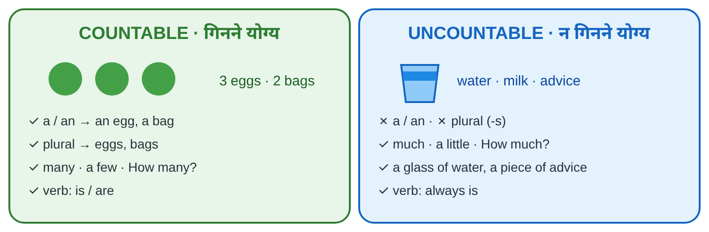
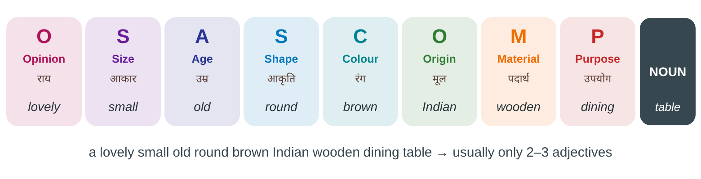
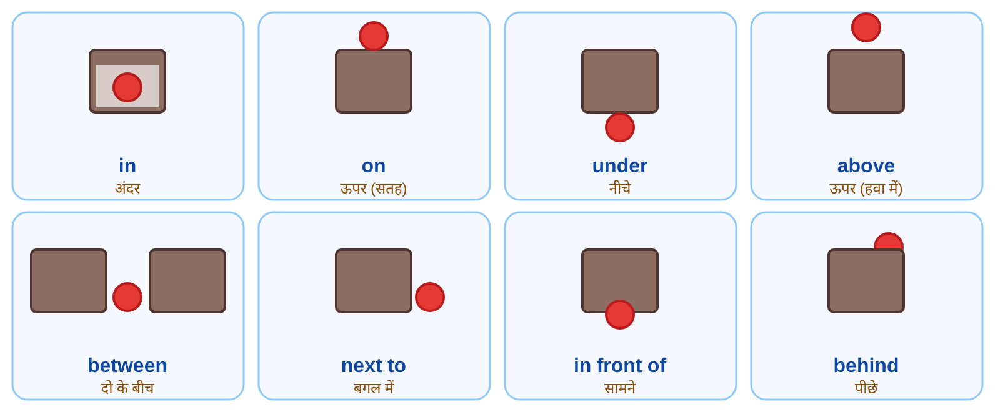

What you will learn in this volume · इस volume में आप क्या सीखेंगे
In Volume 1 you met the 8 parts of speech for the first time (Chapter 4). In this volume you study each one in detail: nouns, pronouns, articles, determiners, adjectives, adverbs, prepositions, conjunctions and interjections – the words that make up every English sentence.
[हिंदी] Volume 1 (Chapter 4) में आपने 8 शब्द-भेदों की पहली झलक देखी थी। इस volume में हर शब्द-भेद को विस्तार से सीखेंगे – संज्ञा, सर्वनाम, a/an/the, some/any जैसे शब्द, विशेषण, क्रिया-विशेषण, संबंधसूचक, समुच्चयबोधक और विस्मयादिबोधक। इन्हीं से हर English वाक्य बनता है।
Before you start · शुरू करने से पहले
You should already know (Volume 1)
Chapter
vowel and consonant sounds (for a/an)
1–2
capital letters and the apostrophe
3
subject, verb, object and word order
4
phrase, clause and sentence
5
questions, negatives and be / have / do
7–8
[हिंदी] अगर ऊपर की कोई चीज़ कमज़ोर लगे, तो पहले Volume 1 का वह chapter दोहरा लीजिए। नीचे का छोटा test 5 मिनट में कीजिए – 8 में से 6 से कम आएँ तो Volume 1 की Part A Revision Quiz फिर से कीजिए।
Choose the correct phrase. (a) a hour (b) an university (c) an honest man (d) a umbrella
Choose the correct order. (a) I every day drink milk. (b) I drink milk every day. (c) I drink every day milk. (d) Milk I drink every day.
______ your brother live in Pune? (a) Do (b) Is (c) Does (d) Are
Which group of words is a phrase? (a) the shop opens at nine (b) because it rained (c) in the old house (d) when she came
Choose the correct sentence. (a) She don't like tea. (b) She doesn't likes tea. (c) She doesn't like tea. (d) She not like tea.
Choose the correct sentence. (a) I am having two sisters. (b) I have two sisters. (c) I has two sisters. (d) I am have two sisters.
Choose the correct sentence. (a) It's tail is long. (b) Its tail is long. (c) Its' tail is long. (d) It tail is long.
There ______ many people at the station. (a) is (b) was (c) were (d) has
How to study this volume · यह volume कैसे पढ़ें
Study plan · पढ़ाई की योजना
Study one chapter in 2 days: Day 1 – rules, examples, mistakes; Day 2 – practice and answer key.
After Chapters 9–14 (nouns to determiners), make a one-page summary in your notebook.
Take the Part B Revision Quiz at the end of the volume. Aim for 70% or more.
Keep a "My Mistakes" page: write every wrong answer and its correct form.
[हिंदी] रोज़ थोड़ा, पर नियम से: एक chapter दो दिन में – पहले दिन नियम, उदाहरण और गलतियाँ; दूसरे दिन practice और answer key। हर गलत उत्तर को अपनी कॉपी के "My Mistakes" पन्ने पर सही रूप के साथ लिखिए।
Answer Key – Quick check · उत्तर
1-chonest में h silent है → an। (Ch 1) 2-b कर्ता + क्रिया + कर्म + समय। (Ch 4) 3-cyour brother = he → Does। (Ch 7) 4-c कर्ता + क्रिया नहीं → phrase। (Ch 5) 5-cdoesn't + मूल क्रिया। (Ch 7) 6-b "पास होना" में -ing नहीं। (Ch 8) 7-bits = उसका (बिना apostrophe)। (Ch 3) 8-cmany people बहुवचन → were। (Ch 8)
Nouns: Kinds, Countable & Uncountable
संज्ञा – प्रकार, गिनने योग्य और न गिनने योग्य
Chapter 9[Foundation]
Learning Goals · सीखने के लक्ष्य – इस chapter के बाद आप
identify nouns in a sentence; वाक्य में संज्ञा (noun) पहचान पाएँगे
name the five kinds of nouns: proper, common, collective, material, abstract; संज्ञा के पाँच प्रकार जानेंगे
separate countable and uncountable nouns; गिनी जा सकने वाली और न गिनी जा सकने वाली संज्ञाएँ अलग करेंगे
use a/an, many, much, a few, a little correctly with them; इनके साथ a/an, many, much सही लगाएँगे
avoid Indian-English errors like advices, furnitures, luggages, informations. advices, furnitures जैसी आम गलतियों से बचेंगे
Warm-up · शुरुआत – what can you count?
Look around your room. You can say one chair, two chairs, three books. But can you say two waters or three furnitures? No! We say two bottles of water and three pieces of furniture.
[हिंदी] कमरे में देखिए: कुर्सी, किताब, पंखा गिने जा सकते हैं (one chair, two chairs)। पर पानी, फ़र्नीचर, दूध को सीधे नहीं गिनते – two bottles of water (पानी की दो बोतलें) कहते हैं। यही इस chapter का मुख्य विचार है।
9.1 What is a noun? · संज्ञा क्या है?
RULE – A noun is a naming word
A noun is the name of a person, place, animal, thing, substance, group, idea or feeling.
Names a …
Examples
person
Ravi, teacher, doctor, mother, Mr Patel
place
Jaipur, school, market, India, kitchen
animal
dog, cow, peacock, elephant
thing
phone, bag, bus, chair, ticket
substance / material
water, rice, gold, cotton, petrol
group
team, family, class, crowd, army
idea / feeling / quality
honesty, love, freedom, anger, childhood
[हिंदी] Noun (संज्ञा) = किसी व्यक्ति, जगह, जानवर, चीज़, पदार्थ, समूह, विचार या भावना का नाम। Ravi (व्यक्ति), Jaipur (जगह), phone (चीज़), water (पदार्थ), team (समूह), honesty (ईमानदारी – गुण)।
Test for a noun: can you put a, an, the, my or this before it? – a phone, the market, my mother, this idea → nouns.
[हिंदी] पहचानने की आसान जाँच: शब्द से पहले a, an, the, my, this लगाकर देखिए – अर्थ बने तो वह संज्ञा है।
9.2 Five kinds of nouns · संज्ञा के पाँच प्रकार
RULE – Kinds of nouns
Kind
Meaning
Examples
Capital letter?
Proper noun
name of one particular person, place or thing
Priya, Mumbai, the Ganga, Monday, Diwali, Tata
Yes, always
Common noun
general name for any member of a class
girl, city, river, day, festival, company
No
Collective noun
name of a group as one unit
team, family, class, crowd, flock, bunch, jury
No
Material noun
name of a substance something is made of
gold, iron, wood, cotton, milk, rice, sand
No
Abstract noun
name of a quality, feeling, state or idea – you cannot touch it
[हिंदी] Proper (व्यक्तिवाचक) = किसी ख़ास एक का नाम – हमेशा capital (Priya, Mumbai)। Common (जातिवाचक) = पूरी जाति का सामान्य नाम (girl, city)। Collective (समूहवाचक) = समूह का नाम (team, family)। Material (द्रव्यवाचक) = पदार्थ (gold, milk)। Abstract (भाववाचक) = गुण, भावना या अवस्था जिसे छू नहीं सकते (honesty, fear, childhood)।
EXAMPLES – one sentence, many kinds
The team from Kerala showed great courage and won a cup made of silver.
team → collective · Kerala → proper · courage → abstract · cup → common · silver → material
[हिंदी] अर्थ: केरल की टीम ने बहुत हिम्मत दिखाई और चाँदी का बना कप जीता। team समूहवाचक, Kerala व्यक्तिवाचक, courage (हिम्मत) भाववाचक, cup जातिवाचक, silver (चाँदी) द्रव्यवाचक।
NOTE – collective nouns for groups
a team of players · a class of students · a crowd of people · a herd of cows · a flock of sheep / birds · a bunch of keys / flowers / grapes · a pack of cards / wolves · a swarm of bees · a fleet of ships · a panel of judges
[हिंदी] समूह के लिए ख़ास शब्द: खिलाड़ियों की team, लोगों की crowd (भीड़), गायों का herd (झुंड), भेड़ों/पक्षियों का flock, चाबियों/फूलों/अंगूरों का bunch (गुच्छा), मधुमक्खियों का swarm।
Making abstract nouns · भाववाचक संज्ञा बनाना
From an adjective
From a verb
From a common noun
honest → honesty
decide → decision
child → childhood
kind → kindness
enter → entrance
friend → friendship
brave → bravery
serve → service
hero → heroism
strong → strength
grow → growth
slave → slavery
free → freedom
believe → belief
king → kingdom
[हिंदी] विशेषण, क्रिया या जातिवाचक संज्ञा में -ty, -ness, -ion, -th, -hood, -ship, -dom जैसे अंत जोड़कर भाववाचक संज्ञा बनती है: honest → honesty (ईमानदार → ईमानदारी), child → childhood (बच्चा → बचपन)। पूरी सूची Chapter 50 में।
9.3 Countable and uncountable nouns · गिनने योग्य और न गिनने योग्य
RULE – Countable vs uncountable
Countable nouns
Uncountable nouns
What are they?
separate things you can count
substances, liquids, masses, ideas – seen as one whole
Plural?
Yes: book → books
No plural: ✗ waters, advices
a / an?
Yes with singular: a book, an egg
No: ✗ a rice, an advice
Verb
singular or plural: The book is … / The books are …
[हिंदी] Countable = जिन्हें अलग-अलग गिन सकते हैं – इनका बहुवचन बनता है और एकवचन के साथ a/an लगता है (a book, two books)। Uncountable = पदार्थ, तरल, ढेर या विचार जिन्हें एक पूरे के रूप में देखते हैं – इनका बहुवचन नहीं, a/anनहीं, क्रिया हमेशा एकवचन (The milk is fresh)। गिनती के लिए many / a few, मात्रा के लिए much / a little।

Countable vs uncountable – how to talk about each
RULE – Counting uncountable nouns with units
Use a unit word + of:
Unit
Examples
a piece of
a piece of advice / information / furniture / news / cake / paper
a glass / cup / bottle of
a glass of water, a cup of tea, two bottles of oil
a kilo / litre / packet of
a kilo of rice, a litre of milk, a packet of salt
a loaf / slice of
a loaf of bread, two slices of bread
an item of
an item of luggage / clothing / news
a bag / suitcase (countable word)
two bags instead of ✗ two luggages
[हिंदी] न गिनी जाने वाली चीज़ को गिनने के लिए इकाई (unit) + of लगाइए: a piece of advice (एक सलाह), a cup of tea (एक कप चाय), a kilo of rice (एक किलो चावल), two slices of bread (ब्रेड के दो टुकड़े)। luggage की जगह गिनने के लिए bags / suitcases बोलिए।
NOTE – nouns that are uncountable in English (but may feel countable in Hindi)
advice, information, furniture, luggage, baggage, equipment, news, homework, work (= job tasks), knowledge, traffic, scenery, weather, money, hair (on your head), bread, toast, research, evidence, stationery, machinery, jewellery, poetry, feedback
✓ She gave me some useful advice. ✗ She gave me some useful advices.
✓ The news is good. ✗ The news are good. (news ends in -s but is singular and uncountable.)
[हिंदी] ये संज्ञाएँ English में हमेशा uncountable हैं – इनमें -s नहीं लगता और a/an नहीं: advice, information, furniture, luggage, news, homework, equipment, traffic, scenery। news के आख़िर में -s है, फिर भी यह एकवचन है: The news is good (ख़बर अच्छी है)।
COMPARE & UNDERSTAND – one word, two meanings
Uncountable (the substance / general idea)
Countable (one item / a type / one occasion)
I don't like coffee. (the drink)
Two coffees, please. (two cups – in a café)
The window is made of glass.
a glass of water · I wear glasses. (spectacles)
Her hair is long. (all of it)
There's a hair in my soup! (one single hair)
I need paper to write on.
I bought a paper. (a newspaper)
He has a lot of experience. (knowledge from work)
It was an amazing experience. (one event)
There is no room in the car. (space)
a house with five rooms
Time is money.
I called him three times. (occasions)
[हिंदी] कुछ शब्द दोनों तरह से चलते हैं, अर्थ बदल जाता है: glass = काँच (uncountable) / गिलास (countable); hair = सारे बाल (uncountable) / एक बाल (countable); paper = कागज़ / अख़बार; experience = अनुभव (ज्ञान) / एक घटना; room = जगह / कमरा; time = समय / बार।
COMMON MISTAKES – nouns
✗ Wrong
✓ Right
Why · क्यों
He gave me many advices.
He gave me a lot of advice / many pieces of advice.
advice is uncountable · advice का बहुवचन नहीं
We bought new furnitures.
We bought new furniture.
uncountable · furniture में -s नहीं
How many luggages do you have?
How many bags do you have? / How much luggage…?
count bags, not luggage · bags गिनिए
I need an information.
I need some information / a piece of information.
no a/an with uncountable · a/an नहीं
The news are shocking.
The news is shocking.
news is singular · news एकवचन है
I have many homeworks today.
I have a lot of homework today.
uncountable · homework में -s नहीं
There is too much traffics.
There is too much traffic.
uncountable · traffic में -s नहीं
I went to delhi.
I went to Delhi.
proper noun → capital · व्यक्तिवाचक में capital
EXAM TIP · परीक्षा टिप
Error-spotting questions love advice, information, furniture, luggage, equipment, news, scenery, poetry, machinery. If you see these with -s, a/an or many, it is almost always the error.
[हिंदी] Error spotting में advice, information, furniture, luggage, news, scenery के साथ -s, a/an या many दिखे, तो लगभग हमेशा वहीं गलती है।
Can you give me some informations about the course?
My luggages are very heavy.
The sceneries of Kashmir are beautiful.
I have many works to finish today.
PRACTICE G – Real life · असल ज़िंदगी
Write a shopping list of six items for your home. Use a unit word with each uncountable item (a kilo of …, a packet of …).
At the airport check-in counter, the officer asks about your luggage. Write two correct sentences you can say.
ANSWER KEY – Chapter 9 · उत्तर और समझ
Practice A 1-bNarmada एक ख़ास नदी का नाम → proper noun (capital)। 2-cherd = जानवरों का झुंड → collective noun। 3-akindness (दयालुता) – छू नहीं सकते → abstract noun। 4-biron (लोहा) – पदार्थ → material noun। 5-cluggage uncountable है; bag, suitcase, ticket गिने जा सकते हैं। 6-cadvice uncountable → a/an और -s नहीं; some advice सही। 7-anews एकवचन, uncountable → is। 8-bwater uncountable → How much। 9-cstudents countable → How many। 10-csugar uncountable → a little। 11-bfurniture uncountable → some (a/an या many नहीं)। 12-c brave → bravery (बहादुरी)। 13-ba bunch of keys (चाबियों का गुच्छा)। 14-b यहाँ a paper = एक अख़बार (countable)। Practice B 15. P (proper – ख़ास इमारत का नाम) 16. A 17. Col 18. M 19. C 20. A Practice C 21. C 22. U 23. C 24. U 25. U 26. C 27. U 28. C Practice D 29. piece 30. loaf (या slice) 31. kilos 32. cup 33. bottle Practice E 34. strength 35. friendship 36. decision 37. freedom 38. growth Practice F
Can you give me some information about the course? (information में -s नहीं)
My luggage is very heavy. / My bags are very heavy.
The scenery of Kashmir is beautiful. (scenery uncountable → is)
I have a lot of work to finish today. (work = काम, uncountable) Practice G – sample answers · नमूना उत्तर
2 kilos of rice, a packet of salt, a litre of oil, a loaf of bread, a dozen eggs, a bottle of ketchup. (eggs countable है, इसलिए a dozen eggs।)
I have two bags to check in and one piece of hand luggage. / My luggage weighs about 22 kilos.
Singular, Plural & Gender
एकवचन, बहुवचन और लिंग
Chapter 10[Foundation]
Learning Goals · सीखने के लक्ष्य – इस chapter के बाद आप
make regular plurals with -s, -es, -ies and -ves; -s, -es, -ies, -ves से नियमित बहुवचन बनाएँगे
learn the common irregular plurals (man → men, child → children); अनियमित बहुवचन याद करेंगे
use nouns that are always plural (scissors, trousers) or look plural but are singular (news, mathematics); हमेशा बहुवचन और "दिखने में बहुवचन" वाली संज्ञाएँ सही इस्तेमाल करेंगे
say a five-star hotel but five stars; संख्या के साथ बहुवचन का सही प्रयोग करेंगे
use masculine, feminine and gender-neutral nouns correctly. पुल्लिंग, स्त्रीलिंग और लिंग-निरपेक्ष शब्द सही लगाएँगे
Warm-up · शुरुआत
One book → two books. One box → two boxes. One child → two … ? Not childs – children! One sheep → two … sheep!
[हिंदी] ज़्यादातर शब्दों में -s लगाकर बहुवचन बनता है, पर कुछ शब्द बिल्कुल अलग रूप लेते हैं (child → children), और कुछ बदलते ही नहीं (sheep → sheep)। आइए सब नियम देखें।
[हिंदी] ज़्यादातर शब्दों में -s। s, sh, ch, x, z पर ख़त्म शब्दों में -es (बोलने में एक syllable बढ़ जाता है: box-es)। व्यंजन + y → ies (city → cities); स्वर + y → सिर्फ़ -s (boys)। कई -f/-fe वाले शब्द → -ves (knife → knives), पर roof, chief, belief में सिर्फ़ -s। potato, tomato, hero → -es; photo, piano, radio, video → -s।
10.2 Irregular plurals · अनियमित बहुवचन
RULE – Learn these by heart
Change of vowel
-en
Same form for both
Foreign (formal/academic)
man → men
child → children
sheep → sheep
criterion → criteria
woman → women
ox → oxen
deer → deer
phenomenon → phenomena
foot → feet
fish → fish (usual)
analysis → analyses
tooth → teeth
aircraft → aircraft
crisis → crises
goose → geese
series → series
basis → bases
mouse → mice
species → species
medium → media
louse → lice
datum → data (often used as uncountable)
person → people (usual)
cactus → cacti / cactuses
[हिंदी] इन्हें रट लीजिए: man → men (आदमी), woman → women (औरतें – उच्चारण "विमिन"), foot → feet (पैर), tooth → teeth (दाँत), mouse → mice (चूहे), child → children (बच्चे), person → people (लोग)। sheep, deer, fish, series, species, aircraft का एकवचन और बहुवचन एक जैसा रहता है।
NOTE – pronunciation of -s / -es
"s" after p, t, k, f: cups, cats, books, chiefs
"z" after vowels and b, d, g, l, m, n, r, v: days, bags, pens, cars
singular: Mathematics is easy. Measles is infectious.
Collective nouns
family, team, class, staff, committee, government
singular (as one unit) in Indian/American English: The team is strong. BrE also uses plural (members): The team are arriving.
[हिंदी] हमेशा बहुवचन: दो हिस्सों वाली चीज़ें – scissors (कैंची), trousers (पतलून), jeans, glasses (चश्मा) – और clothes, goods, police, cattle, people। इन्हें गिनने के लिए a pair of (a pair of scissors = एक कैंची)। दिखने में बहुवचन, पर एकवचन:news, mathematics, physics, economics, measles – क्रिया is। समूहवाचक (team, family) भारत/अमेरिका में आम तौर पर एकवचन (The team is…)।
RULE – numbers, measurements and compound nouns
Number + noun as an adjective (before another noun) → singular: a five-star hotel, a ten-rupee note, a two-week holiday, a six-foot wall.
But as a normal noun → plural: The hotel has five stars. The holiday lasted two weeks.
hundred, thousand, lakh, crore, dozen, million after a number → no -s: two hundred people, five lakh rupees, three dozen eggs. (hundreds of people = an unknown large number.)
Compound nouns: make the main word plural: brothers-in-law, passers-by, commanders-in-chief; noun + noun: bus stops, toothbrushes, girlfriends.
[हिंदी] (1) संख्या + संज्ञा जब दूसरी संज्ञा से पहले विशेषण बने तो एकवचन: a five-star hotel (पाँच-सितारा होटल), a ten-rupee note। (2) hundred, thousand, lakh, crore, dozen संख्या के बाद -s नहीं लेते: five lakh rupees। (3) यौगिक शब्द में मुख्य शब्द बहुवचन बनता है: brothers-in-law (साले/जीजा लोग), passers-by (राहगीर)।
teacher, doctor, student, friend, cousin, parent, child, baby, person
Neuter
non-living things / no gender
table, book, tree, city, phone, idea
[हिंदी] English में संज्ञा का लिंग असली लिंग से तय होता है, शब्द से नहीं। हिंदी में किताब स्त्रीलिंग और पेड़ पुल्लिंग है, पर English में book, tree, table – सब neuter (नपुंसक) हैं और इनके लिए it आता है। teacher, doctor, friend पुरुष या महिला दोनों हो सकते हैं – common gender।
Modern English, especially in offices and exams, prefers one word for everyone:
Older
Modern (preferred)
chairman / chairwoman
chairperson, chair
salesman / saleswoman
salesperson, sales executive
policeman / policewoman
police officer
fireman
firefighter
air hostess / steward
flight attendant, cabin crew
mankind
humankind, people
actress, authoress, poetess
actor (both), author, poet (both)
Ms (pronounced "miz") is used for a woman when marital status is unknown or not relevant.
[हिंदी] आज की औपचारिक English में सबके लिए एक ही शब्द बेहतर माना जाता है: chairperson, police officer, firefighter, flight attendant। actor, author, poet अब पुरुष और महिला दोनों के लिए। विवाहित है या नहीं – पता न हो तो महिला के लिए Ms ("मिज़") लिखिए।
COMMON MISTAKES – plural and gender
✗ Wrong
✓ Right
Why · क्यों
two childs / childrens
two children
irregular; children is already plural · children पहले से बहुवचन
many peoples came
many people came
people = plural of person · people ख़ुद बहुवचन
a ten-rupees note
a ten-rupee note
number + noun before a noun → singular · विशेषण बना तो एकवचन
five lakhs rupees
five lakh rupees
no -s after a number · संख्या के बाद lakh में -s नहीं
My trouser is torn.
My trousers are torn.
always plural · हमेशा बहुवचन
a scissor
a pair of scissors / scissors
always plural · a pair of लगाइए
Mathematics are my favourite subject.
Mathematics is …
subject names in -ics are singular · विषय का नाम एकवचन
I bought new furnitures and cloths.
… new furniture and clothes.
clothes = कपड़े (पहनने के); cloths = कपड़े के टुकड़े · अर्थ अलग
The book is on the table. She is very old. (about the book)
It is very old.
non-living things are neuter → it · निर्जीव के लिए it
COMPARE & UNDERSTAND
cloth (uncountable: material) – cotton cloth
clothes (plural: things you wear) – new clothes
people (plural of person) – ten people
peoples (nations / ethnic groups) – the peoples of Asia
fish (usual plural) – I caught five fish.
fishes (different species) – the fishes of the Indian Ocean
hundreds of people (unknown number)
two hundred people (exact number)
[हिंदी] cloth = कपड़ा (सामग्री), clothes = पहनने के कपड़े। people = लोग, peoples = जातियाँ/राष्ट्र। five fish = पाँच मछलियाँ, fishes = मछलियों की अलग-अलग प्रजातियाँ। hundreds of = सैकड़ों (अनिश्चित), two hundred = ठीक दो सौ।
EXAM TIP · परीक्षा टिप
Watch for: lakh/crore/dozen/hundred with -s after a number, number-noun adjectives (a two-hour journey), always-plural nouns + singular verb, and -ics subjects + plural verb. These four are the most common plural errors in SSC/bank papers.
[हिंदी] परीक्षा में सबसे ज़्यादा पूछे जाने वाली चार गलतियाँ: संख्या के बाद lakhs/dozens, a two-hours journey, trousers/scissors के साथ is, और mathematics/economics के साथ are।
QUICK REVISION · जल्दी दोहराइए
Plural: -s · -es (s, sh, ch, x, z, many -o) · consonant+y → ies · many -f/-fe → ves.
Always plural: scissors, trousers, jeans, glasses, clothes, police, cattle (a pair of …). Singular: news, mathematics, measles.
a five-star hotel · two hundred / five lakh (no -s) · brothers-in-law.
Gender follows real sex; things = it; prefer chairperson, police officer, flight attendant.
[हिंदी] बहुवचन के नियम · अनियमित रूप · हमेशा बहुवचन/एकवचन वाले शब्द · संख्या-विशेषण एकवचन · निर्जीव = it।
PRACTICE A – Multiple choice · सही विकल्प चुनिए
The plural of knife is: (a) knifes (b) knives (c) knifies (d) knive
The plural of tomato is: (a) tomatos (b) tomatoes (c) tomatoies (d) tomato
The plural of photo is: (a) photoes (b) photos (c) photies (d) photoss
The plural of tooth is: (a) tooths (b) teeths (c) teeth (d) toothes
The plural of mother-in-law is: (a) mother-in-laws (b) mothers-in-law (c) mothers-in-laws (d) mother-ins-law
Choose the correct phrase. (a) a two-weeks holiday (b) a two-week holiday (c) a two-weeks' holidays (d) a two week's holiday
Choose the correct phrase. (a) five lakhs rupees (b) five lakh rupees (c) five lakh rupee (d) five lakhs rupee
My new jeans ______ too long. (a) is (b) are (c) was (d) has
Economics ______ my favourite subject. (a) are (b) were (c) is (d) have
Which noun has the same singular and plural form? (a) goat (b) deer (c) cow (d) horse
The feminine of nephew is: (a) niecess (b) niece (c) nephewess (d) aunt
The gender-neutral word for fireman is: (a) firewoman (b) fire person (c) firefighter (d) fire man
The police ______ searching for the thief. (a) is (b) are (c) has (d) was
teacher is a noun of ______ gender. (a) masculine (b) feminine (c) common (d) neuter
PRACTICE B – Write the plural · बहुवचन लिखिए
church ______ 16. lady ______ 17. day ______ 18. wolf ______ 19. roof ______ 20. mouse ______ 21. woman ______ 22. series ______ 23. passer-by ______ 24. crisis ______
PRACTICE C – Write the opposite gender · विपरीत लिंग लिखिए
bride ______ 26. host ______ 27. tigress ______ 28. son ______ 29. hen ______ 30. lord ______
PRACTICE D – Choose is / are · is या are चुनिए
The news from the hospital ______ good.
These scissors ______ very sharp.
Two hundred students ______ in the hall.
Measles ______ a serious disease for small children.
My glasses ______ on the table.
PRACTICE E – Correct the errors · गलतियाँ सुधारिए
There were many peoples at the wedding.
She bought three dozens bananas.
We stayed in a three-stars hotel.
All the childrens are playing outside.
I need a new trouser for the interview.
PRACTICE F – Real life · असल ज़िंदगी
Write a WhatsApp message to a tailor about two pairs of trousers and three shirts you want to collect on Saturday.
Describe your family in three sentences. Use at least three nouns from the gender table (e.g. nephew, aunt, cousin).
ANSWER KEY – Chapter 10 · उत्तर और समझ
Practice A 1-b-fe → -ves: knives। 2-b व्यंजन + o वाले कई शब्द → -es: tomatoes। 3-bphoto छोटा रूप है (photograph) → सिर्फ़ -s। 4-c अनियमित: tooth → teeth। 5-b यौगिक शब्द में मुख्य शब्द mother बहुवचन बनता है। 6-b संख्या + संज्ञा विशेषण बनी → एकवचन, hyphen के साथ। 7-b संख्या के बाद lakh में -s नहीं; rupees बहुवचन। 8-bjeans हमेशा बहुवचन → are। 9-c-ics वाले विषय एकवचन → is। 10-bdeer का एकवचन और बहुवचन एक जैसा। 11-bnephew (भतीजा/भांजा) → niece (भतीजी/भांजी)। 12-c लिंग-निरपेक्ष शब्द firefighter। 13-bpolice हमेशा बहुवचन → are। 14-cteacher पुरुष या महिला दोनों → common gender। Practice B 15. churches 16. ladies 17. days 18. wolves 19. roofs 20. mice 21. women 22. series 23. passers-by 24. crises Practice C 25. bridegroom 26. hostess 27. tiger 28. daughter 29. cock / rooster 30. lady Practice D 31. is 32. are 33. are 34. is 35. are Practice E
There were many people at the wedding. (people ख़ुद बहुवचन है)
She bought three dozen bananas. (संख्या के बाद dozen में -s नहीं)
We stayed in a three-star hotel. (विशेषण बना → एकवचन)
All the children are playing outside. (childrens कोई शब्द नहीं)
I need a new pair of trousers / new trousers for the interview. Practice F – sample answers · नमूना उत्तर
Hello Masterji, I will come on Saturday to collect my two pairs of trousers and three shirts. Please keep them ready. Thank you.
I live with my parents and my younger sister. My aunt lives in Indore with her two sons. My nephew, Aarav, is five years old.
Possessives
संबंध / स्वामित्व दिखाना – 's, of और possessive शब्द
Chapter 11[Foundation]
Learning Goals · सीखने के लक्ष्य – इस chapter के बाद आप
show possession with 's and s' correctly; 's और s' से "का/की/के" सही दिखाएँगे
choose between 's and of (Riya's bag vs the door of the room); 's और of में सही चुनाव करेंगे
use my/your/his and mine/yours/his correctly; my/your और mine/yours का फ़र्क़ समझेंगे
write joint and separate possession (Ram and Sita's house); साझा और अलग-अलग स्वामित्व लिखेंगे
use time expressions like a week's leave, two hours' journey. समय के साथ possessive (a week's leave) लगाएँगे
Warm-up · शुरुआत
This is Riya's phone. = This phone belongs to Riya. · This phone is hers.
[हिंदी] हिंदी में "रिया का फ़ोन", "उसका फ़ोन" कहते हैं। English में यह काम 's (Riya's), of (the name of the shop) और possessive शब्द (her, hers) करते हैं।
11.1 Apostrophe + s · 's और s'
RULE – where to put the apostrophe
Owner
Rule
Examples
singular noun
's
the boy's bag (one boy) · my sister's room · Ramesh's shop
singular noun ending in -s
's (usual) or '
James's car / James' car · the boss's office
plural noun ending in -s
' only
the boys' bags (many boys) · my parents' house · the teachers' room
plural noun not ending in -s
's
the children's park · women's day · men's toilet · people's opinion
compound noun
's on the last word
my mother-in-law's house · the Prime Minister's speech
[हिंदी] एक मालिक → 's: the boy's bag (लड़के का बैग)। -s वाले बहुवचन मालिक → सिर्फ़ ': the boys' bags (लड़कों के बैग)। बिना -s वाले बहुवचन (children, women, men, people) → 's: children's park। यौगिक शब्द में आख़िरी शब्द पर 's: my mother-in-law's house (मेरी सास का घर)।
EXAMPLES – one letter, different meaning
my friend's wedding = the wedding of one friend
my friends' wedding = the wedding of two or more friends (they are marrying each other)
the student's marks = one student · the students' marks = many students
[हिंदी] apostrophe की जगह से अर्थ बदलता है: friend's = एक दोस्त का, friends' = कई दोस्तों का। student's marks = एक छात्र के अंक, students' marks = सभी छात्रों के अंक।
11.2 's or of? · 's लगाएँ या of?
RULE – choosing 's or "of"
Use 's mainly with …
Use of mainly with …
people and animals: Meena's idea, the dog's tail
things and places: the door of the car, the roof of the house
organisations, countries, cities: the company's profit, India's population (of also OK)
long owner phrases: the name of the man who called yesterday
time: today's paper, a week's holiday
parts, amounts, positions: the end of the film, the top of the page, a cup of tea
Compound nouns also work for things: the car door, the kitchen window, the table leg.
[हिंदी] 's आम तौर पर लोगों और जानवरों के साथ (Meena's idea), संस्था/देश के साथ (India's population) और समय के साथ (today's paper = आज का अख़बार)। of आम तौर पर निर्जीव चीज़ों के साथ (the door of the car = गाड़ी का दरवाज़ा), लंबे वाक्यांशों और हिस्से/मात्रा के साथ (the end of the film, a cup of tea)। चीज़ों के लिए दो संज्ञाएँ साथ भी चलती हैं: the car door।
RULE – possessive with time and distance
a day's work · a week's leave · today's news · tomorrow's meeting · two hours' drive · three months' salary · a stone's throw (very near)
Compare: a two-hour drive (number + noun adjective, Ch 10) = two hours' drive – both correct.
[हिंदी] समय और दूरी के साथ भी possessive लगता है: a week's leave (एक हफ़्ते की छुट्टी), two hours' drive (दो घंटे का सफ़र), a stone's throw (बिल्कुल पास)। a two-hour drive भी सही है।
11.3 Joint, separate and double possession · साझा, अलग और दोहरा स्वामित्व
RULE – two owners
Joint (they own it together) → 's on the last name only: Ram and Sita's house (one house, both own it).
Separate (each owns his/her own) → 's on each name: Ram's and Sita's phones (two different phones).
Double possessive = a/an/this/some + noun + of + possessive: a friend of mine, a cousin of Priya's, this book of yours.
[हिंदी] साझा: दोनों का एक ही घर → आख़िरी नाम पर 's (Ram and Sita's house)। अलग-अलग: हर एक की अपनी चीज़ → दोनों नामों पर 's (Ram's and Sita's phones)। "मेरा एक दोस्त" = a friend of mine (a my friend नहीं)।
11.4 Possessive adjectives and possessive pronouns · my और mine
RULE – my vs mine
Person
Possessive adjective (+ noun)
Possessive pronoun (no noun)
I
my book
The book is mine.
you
your bag
The bag is yours.
he
his car
The car is his.
she
her phone
The phone is hers.
it
its tail
– (rarely used)
we
our house
The house is ours.
they
their tickets
The tickets are theirs.
No apostrophe in any of these: ✗ your's, her's, our's, their's, it's (for possession).
[हिंदी] my, your, his, her, its, our, their हमेशा संज्ञा से पहले आते हैं (my book = मेरी किताब)। mine, yours, his, hers, ours, theirsअकेले आते हैं, उनके बाद संज्ञा नहीं (The book is mine = किताब मेरी है)। इनमें कभी apostrophe नहीं लगता – yours, your's नहीं।
COMPARE & UNDERSTAND – sound-alike pairs
Possessive (belonging)
Short form (contraction)
its – The bird hurt its wing.
it's = it is / it has – It's raining.
your – Is this your pen?
you're = you are – You're late.
their – Their house is big.
they're = they are – They're coming. · there = place – Sit there.
whose – Whose bag is this?
who's = who is / who has – Who's at the door?
[हिंदी] बोलने में एक जैसे, अर्थ अलग: its = उसका / it's = it is; your = तुम्हारा / you're = you are; their = उनका / they're = they are / there = वहाँ; whose = किसका / who's = who is।
COMMON MISTAKES – possessives
✗ Wrong
✓ Right
Why · क्यों
This is my fathers car.
This is my father's car.
apostrophe needed · 's लगाइए
the girls's hostel
the girls' hostel
plural in -s → ' only · -s वाले बहुवचन में सिर्फ़ '
the childrens' toys
the children's toys
children has no -s → 's · children में 's
Is this pen your's?
Is this pen yours?
no apostrophe in possessive pronouns · yours में ' नहीं
He is a my friend.
He is a friend of mine / my friend.
double possessive · "मेरा एक दोस्त"
the table's leg
the leg of the table / the table leg
things → of or compound · निर्जीव के लिए of
Ram's and Sita's house (one house)
Ram and Sita's house
joint ownership → 's once · साझा = एक बार 's
Who's car is this?
Whose car is this?
whose = belonging · किसका = whose
EXAM TIP · परीक्षा टिप
In error spotting, check: (1) 's vs s' – is the owner one or many? (2) its/it's, whose/who's (3) yours/hers/theirs without apostrophe (4) a friend of mine (not a my friend / a friend of me).
[हिंदी] जाँचिए: मालिक एक है या कई ('s या s')? its/it's, whose/who's सही है? yours में apostrophe तो नहीं? a friend of mine सही रूप है।
QUICK REVISION · जल्दी दोहराइए
One owner 's · plural in -s ' · children's, women's's · compound: mother-in-law's.
People/animals/time → 's; things/parts → of (or car door).
Joint: Ram and Sita's · separate: Ram's and Sita's · double: a friend of mine.
my/your/his/her/its/our/their + noun · mine/yours/his/hers/ours/theirs alone · no apostrophe.
[हिंदी] 's / s' · लोगों के लिए 's, चीज़ों के लिए of · साझा और अलग स्वामित्व · my + संज्ञा, mine अकेला · yours, its, whose में apostrophe नहीं।
PRACTICE A – Multiple choice · सही विकल्प चुनिए
This is ______ bicycle. (one brother) (a) my brothers (b) my brother's (c) my brothers' (d) my brother
The ______ hostel is near the gate. (for many boys) (a) boy's (b) boys's (c) boys' (d) boys
The ______ section is on the first floor. (a) childrens' (b) childrens (c) children's (d) childs'
I took a ______ leave from office. (a) weeks (b) week's (c) weeks' (d) week
Choose the correct phrase. (a) the house's roof (b) the roof of the house (c) the roofs' house (d) the house roof's
This umbrella isn't mine. Is it ______? (a) your's (b) yours (c) yours' (d) you're
The cat is licking ______ paw. (a) it's (b) its' (c) its (d) it
______ phone is ringing? (a) Who's (b) Whose (c) Who (d) Whom
Choose the correct phrase. (Rahul and Neha own one shop together.) (a) Rahul's and Neha's shop (b) Rahul and Neha's shop (c) Rahul's and Neha shop (d) Rahul and Nehas' shop
Choose the correct sentence. (a) He is a my friend. (b) He is a friend of me. (c) He is a friend of mine. (d) He is a mine friend.
The ______ speech was broadcast live. (a) Prime Minister's (b) Prime's Minister (c) Prime Ministers (d) Prime Minister'
Which is correct for two separate phones? (a) Amit and Ravi's phones (b) Amit's and Ravi's phones (c) Amit and Ravis' phones (d) Amits and Ravis phones
The decision is ______, not ours. (a) their (b) theirs (c) their's (d) there's
______ the person who called you? (a) Whose (b) Who's (c) Whom (d) Who is's
PRACTICE B – Rewrite using 's or ' · 's या ' से दोबारा लिखिए
the bag of my sister → ______
the uniforms of the players → ______
the toys of the children → ______
the clinic of Dr Sharma → ______
the salary of one month → ______
the opinion of the people → ______
PRACTICE C – my or mine? Fill in the correct word · सही शब्द भरिए
This is ______ seat. (I) The window seat is ______. (I)
Are these keys ______? (you)
Neha forgot ______ lunch box. (she)
That red car is ______. (we)
The children cleaned ______ room themselves. (they)
PRACTICE D – Choose the correct word · सही शब्द चुनिए
(Its / It's) a beautiful day.
(Whose / Who's) shoes are these?
(Their / They're / There) parents are doctors.
(Your / You're) going to love this film.
(Whose / Who's) coming with us?
PRACTICE E – Correct the errors · गलतियाँ सुधारिए
My uncles shop is closed on Mondays.
The ladie's toilet is on the left.
Is this book her's?
The dog wagged it's tail.
The table's legs are broken.
She is a cousin of me.
PRACTICE F – Translate · अनुवाद कीजिए
यह मेरे दोस्त की बाइक है।
लड़कियों का कॉमन रूम ऊपर है।
आज का अख़बार कहाँ है?
वह मेरी एक सहेली है।
PRACTICE G – Real life · असल ज़िंदगी
At a lost-and-found counter, write three sentences describing a bag you lost and saying it is yours (use my, mine and one 's).
ANSWER KEY – Chapter 11 · उत्तर और समझ
Practice A 1-b एक भाई → brother's। 2-c कई लड़के, boys में -s है → सिर्फ़ apostrophe: boys'। 3-cchildren में -s नहीं → children's। 4-b समय के साथ possessive: a week's leave। 5-b निर्जीव चीज़ का हिस्सा → of: the roof of the house। 6-b possessive pronoun yours में apostrophe नहीं। 7-cits = उसका (बिल्ली का)। it's = it is। 8-bWhose = किसका। 9-b साझा स्वामित्व → आख़िरी नाम पर 's। 10-c "मेरा एक दोस्त" = a friend of mine। 11-a यौगिक नाम में आख़िरी शब्द पर 's। 12-b अलग-अलग फ़ोन → दोनों नामों पर 's। 13-b संज्ञा के बिना अकेला → theirs। 14-bWho's = Who is (कौन है)। Practice B
my sister's bag 16. the players' uniforms 17. the children's toys 18. Dr Sharma's clinic 19. one month's salary 20. the people's opinion Practice C 21. my … mine 22. yours 23. her 24. ours 25. their Practice D 26. It's 27. Whose 28. Their 29. You're 30. Who's Practice E
My uncle's shop is closed on Mondays.
The ladies' toilet is on the left. (ladies बहुवचन, -s पर ख़त्म → ')
Is this book hers?
The dog wagged its tail.
The legs of the table are broken. / The table legs are broken.
She is a cousin of mine. / She is my cousin. Practice F
This is my friend's bike.
The girls' common room is upstairs.
Where is today's newspaper?
She is a friend of mine. Practice G – sample answer · नमूना उत्तर
I lost my black backpack near Gate 2. It has my brother's laptop inside and a blue water bottle. The name tag says "Kiran Shah" – the bag is mine.
Pronouns & Pronoun Reference
सर्वनाम और सर्वनाम का सही संदर्भ
Chapter 12[Foundation][Intermediate]
Learning Goals · सीखने के लक्ष्य – इस chapter के बाद आप
use subject and object pronouns correctly (I/me, he/him, they/them); कर्ता और कर्म वाले सर्वनाम सही लगाएँगे
use reflexive pronouns (myself, themselves) only where needed; myself, themselves सिर्फ़ ज़रूरत पर लगाएँगे
use this/that/these/those and someone/anyone/everyone; संकेतवाचक और अनिश्चयवाचक सर्वनाम सही लगाएँगे
make every pronoun agree with its noun and point clearly to it; सर्वनाम को सही संज्ञा से मिलाएँगे और अर्थ साफ़ रखेंगे
avoid errors like Me and Ravi went, between you and I, Myself Priya. Me and Ravi went, Myself Priya जैसी गलतियों से बचेंगे
Warm-up · शुरुआत
Ravi called Ravi's mother because Ravi wanted Ravi's mother to bring Ravi's charger. – Too many Ravis! → Ravi called his mother because he wanted her to bring his charger.
[हिंदी] बार-बार संज्ञा दोहराने की बजाय हम सर्वनाम (pronoun) लगाते हैं – he, his, her। सर्वनाम संज्ञा की जगह आता है और वाक्य को छोटा और साफ़ बनाता है।
12.1 Personal pronouns · पुरुषवाचक सर्वनाम
RULE – subject, object, possessive, reflexive
Person
Subject (does the action)
Object (receives the action)
Possessive adj. / pronoun
Reflexive
1st sing.
I
me
my / mine
myself
2nd
you
you
your / yours
yourself / yourselves
3rd sing. male
he
him
his / his
himself
3rd sing. female
she
her
her / hers
herself
3rd sing. thing/animal
it
it
its / –
itself
1st plural
we
us
our / ours
ourselves
3rd plural
they
them
their / theirs
themselves
[हिंदी] Subject form (कर्ता) क्रिया से पहले: I, he, she, we, they (मैं, वह, हम, वे)। Object form (कर्म) क्रिया या preposition के बाद: me, him, her, us, them (मुझे, उसे, हमें, उन्हें)। She called me. = उसने मुझे फ़ोन किया। with him = उसके साथ।
EXAMPLES – subject or object?
She teaches us English. (she = subject, us = object)
Please give them the keys. · Come with me. (after a preposition → object)
My brother and I are twins. (part of the subject → I)
The teacher praised my brother and me. (part of the object → me)
[हिंदी] पहचान की आसान तरकीब: दूसरा नाम हटाकर देखिए। My brother and I are twins → I am… ✓। The teacher praised my brother and me → praised me ✓ (praised I ✗)।
RULE – polite order and "It's me"
Put yourself last: Ravi and I (not I and Ravi), you and me, my wife and I.
After between, with, for, to, except → object form: between you and me, for him and her.
It's me. / That's him. is normal English. Very formal: It is I. (rare)
Comparisons: She is taller than me. (everyday) = She is taller than I am. (formal) – both correct.
[हिंदी] शिष्टता: अपने आप को आख़िर में रखिए – Ravi and I, I and Ravi नहीं। preposition के बाद object form: between you and me (तुम्हारे और मेरे बीच) – between you and I गलत। It's me (मैं हूँ) सामान्य English है।
12.2 Reflexive and emphatic pronouns · निजवाचक सर्वनाम
RULE – myself, yourself, themselves …
Reflexive: the subject and object are the same person: I hurt myself. · She looked at herself in the mirror. · Enjoy yourselves!
Emphatic: to stress "that person, nobody else": I myself saw it. · The Principal herself came.
by + reflexive = alone / without help: He lives by himself. · I made it by myself.
Don't use a reflexive as a normal subject or object: ✗ Myself Priya. ✗ Please contact myself.
[हिंदी] Reflexive: कर्ता और कर्म एक ही व्यक्ति – I hurt myself (मुझे ख़ुद चोट लगी)। Emphatic: ज़ोर देने के लिए – I myself saw it (मैंने ख़ुद देखा)। by myself = अकेले / बिना मदद। परिचय में Myself Priyaगलत है – कहिए I am Priya या My name is Priya।
COMMON MISTAKES – personal and reflexive pronouns
✗ Wrong
✓ Right
Why · क्यों
Me and Ravi went to the market.
Ravi and I went to the market.
subject form + yourself last · कर्ता = I, ख़ुद को आख़िर में
Myself Priya from Surat.
I am Priya from Surat. / My name is Priya.
reflexive is not a subject · Myself से परिचय नहीं
Please send it to myself.
Please send it to me.
normal object → me · सामान्य कर्म = me
between you and I
between you and me
after preposition → object · preposition के बाद me
He himself he did it.
He did it himself. / He himself did it.
no double subject · कर्ता दो बार नहीं
The book, it is on the table.
The book is on the table.
no extra pronoun after the noun · संज्ञा के बाद फिर it नहीं
I enjoyed at the party.
I enjoyed myself at the party. / I enjoyed the party.
enjoy needs an object · enjoy के बाद कर्म चाहिए
12.3 Demonstrative, indefinite and reciprocal pronouns · संकेतवाचक, अनिश्चयवाचक, परस्पर
RULE – this / that / these / those
Near (यह / ये)
Far (वह / वे)
Singular
this – This is my seat.
that – That is our bus.
Plural
these – These are fresh.
those – Those are old.
On the phone: This is Ravi speaking. · Is that Meena?
[हिंदी] पास की एक चीज़ = this, पास की कई = these, दूर की एक = that, दूर की कई = those। फ़ोन पर अपना परिचय: This is Ravi (मैं रवि बोल रहा हूँ)।
RULE – indefinite pronouns
some- (positive)
any- (questions, negatives)
no- (= not any)
every- (all)
someone / somebody
anyone / anybody
no one / nobody
everyone / everybody
something
anything
nothing
everything
somewhere
anywhere
nowhere
everywhere
They take a singular verb: Everyone is here. Nobody knows. Something has happened.
Use one negative only: I didn't see anyone. = I saw no one.
Later reference: Someone left their bag. (his or her is formal) – both accepted.
[हिंदी] someone = कोई, anyone = कोई भी (सवाल/नकार में), no one / nobody = कोई नहीं, everyone = सब। something = कुछ, nothing = कुछ नहीं, everything = सब कुछ। इनके साथ क्रिया एकवचन: Everyone is here (सब यहाँ हैं – पर English में is)।
RULE – reciprocal: each other / one another
Ravi and Sita love each other. · The players congratulated one another. each other = usually two people; one another = more than two (in everyday English both are used for any number).
[हिंदी] each other / one another = एक-दूसरे को। They help each other = वे एक-दूसरे की मदद करते हैं। (They help themselves = वे अपनी ख़ुद मदद करते हैं – अर्थ अलग!)
12.4 Interrogative and relative pronouns (first look) · प्रश्नवाचक और संबंधवाचक
NOTE – who, whom, whose, which, what, that
Questions: Who is calling? Whom did you invite? Whose is this? Which do you want? What happened?
Joining clauses (relative): the man who helped me · the girl whose phone was lost · the book which/that I bought.
Full study of relative clauses in Chapter 34.
[हिंदी] सवाल में: who (कौन), whom (किसको), whose (किसका), which (कौन-सा), what (क्या)। वाक्य जोड़ने में: the man who helped me = वह आदमी जिसने मेरी मदद की। विस्तार Chapter 34 में।
12.5 Agreement and clear reference · मेल और साफ़ संदर्भ
RULE – a pronoun must agree with its noun and point clearly to it
Number and gender agree: The girls forgot their bags. · The company changed its logo. (company = it)
Each / every / either / neither + singular: Each student must bring his or her / their ID. (verb stays singular: Each student has …)
Clear reference – if two nouns could fit, repeat the noun:
✗ Ravi told Amit that he had won. (who won?) → ✓ Ravi told Amit, "You have won." / Ravi told Amit that Amit had won.
Vague this / it: make it clear what this refers to: ✗ The bus was late and it rained. This made me angry. → ✓ This delay made me angry.
[हिंदी] (1) सर्वनाम अपनी संज्ञा से वचन और लिंग में मेल खाए: The company changed its logo (कंपनी = it)। (2) each, every, either, neither के साथ एकवचन क्रिया। (3) अगर he/she से दो लोग समझ आ सकते हैं, तो नाम दोहराइए – अर्थ साफ़ रहे।
COMPARE & UNDERSTAND
They blamed themselves. (each blamed self)
They blamed each other. (A blamed B, B blamed A)
I did it myself. (no help)
I did it by myself. (alone, no help) – same idea
Who did you call? (everyday)
Whom did you call? (formal)
She is older than me. (everyday)
She is older than I (am). (formal)
[हिंदी] themselves = अपने आप को, each other = एक-दूसरे को। Who/me रोज़ की बोलचाल में, Whom/I am औपचारिक लेखन में – दोनों सही।
EXAM TIP · परीक्षा टिप
Common exam errors: between you and I, Me and my friend went, Each of the boys have done their, One must do his duty (✓ formal; one's duty also ✓), Myself, and He and me went. Test by removing the other person.
[हिंदी] परीक्षा में अक्सर: between you and I (गलत), Me and my friend went (गलत), Each of the boys have (गलत – has)। जाँच का तरीक़ा: दूसरा व्यक्ति हटाकर पढ़िए।
QUICK REVISION · जल्दी दोहराइए
Subject: I, he, she, we, they · Object: me, him, her, us, them.
Ravi and I (subject) · Ravi and me (object) · between you and me.
Reflexive only when subject = object or for emphasis; never Myself Priya.
Pronoun agrees with its noun and must have one clear reference.
[हिंदी] कर्ता: I/he/they · कर्म: me/him/them · ख़ुद को आख़िर में · myself सिर्फ़ ज़रूरत पर · everyone + एकवचन क्रिया · संदर्भ साफ़।
PRACTICE A – Multiple choice · सही विकल्प चुनिए
______ and Priya are in the same class. (a) Me (b) I (c) Myself (d) Mine
The teacher asked Priya and ______ to stay back. (a) I (b) me (c) myself (d) mine
This secret is between you and ______. (a) I (b) me (c) myself (d) mine
Choose the correct introduction. (a) Myself Arjun. (b) Me Arjun. (c) I am Arjun. (d) Myself is Arjun.
She cut ______ while cooking. (a) her (b) herself (c) hers (d) she
The children enjoyed ______ at the fair. (a) them (b) theirs (c) themselves (d) themself
______ are my shoes, and those are yours. (a) This (b) These (c) That (d) It
Everyone ______ ready for the trip. (a) are (b) is (c) were (d) have
I didn't meet ______ at the station. (a) nobody (b) anybody (c) somebody (d) nothing
The two sisters help ______ with homework. (a) themselves (b) each other (c) theirs (d) itself
The company has opened ______ new branch in Indore. (a) their (b) its (c) it's (d) his
Each of the girls ______ a prize. (a) have won (b) has won (c) were won (d) are won
______ did you meet at the conference? (formal) (a) Who (b) Whom (c) Whose (d) Which
Which sentence is clear? (a) Neha told Riya that she was late. (b) Neha told Riya, "You are late." (c) She told her that she was late. (d) Neha told her that she late.
PRACTICE B – Replace the bold words with a pronoun · मोटे शब्दों की जगह सर्वनाम लिखिए
Rohan is my cousin. → ______ is my cousin.
I met Mrs Iyer at the bank. → I met ______ at the bank.
My friends and I watched a movie. → ______ watched a movie.
Give the keys to the guards. → Give the keys to ______.
The laptop is new. → ______ is new.
This is Tanvi's and my project. → This is ______ project.
PRACTICE C – Fill in the reflexive pronoun · निजवाचक सर्वनाम भरिए
Be careful! Don't hurt ______. (you, one person)
We painted the room ______.
The machine switches ______ off after an hour.
Did the students organise the event by ______?
He taught ______ to play the guitar.
PRACTICE D – Choose the correct word · सही शब्द चुनिए
(Somebody / Anybody) is knocking at the door.
Is there (something / anything) to eat?
(This / These) mangoes are very sweet.
(Nobody / Anybody) came to the meeting. It was cancelled.
(That / Those) building over there is the new hospital.
PRACTICE E – Correct the errors · गलतियाँ सुधारिए
Me and my brother play cricket every Sunday.
Please call myself if you need help.
My father, he works in a bank.
Everybody have finished the test.
I and Rahul will come tomorrow.
They hurt theirselves in the accident.
PRACTICE F – Real life · असल ज़िंदगी
Introduce yourself in three correct sentences for a job interview (no Myself!).
On the phone, your friend asks "Who's speaking?" Write a natural reply.
Rewrite this unclear sentence in two clear ways: "Mohan met Suresh after he came back from Dubai."
Write two sentences about your friends using each other and themselves.
ANSWER KEY – Chapter 12 · उत्तर और समझ
Practice A 1-b कर्ता का हिस्सा → I (I am in the same class ✓)। 2-b कर्म का हिस्सा → me (asked me ✓)। 3-b preposition between के बाद object form me। 4-cMyself से परिचय गलत; I am Arjun। 5-b कर्ता और कर्म एक ही → herself। 6-cenjoy को कर्म चाहिए → enjoyed themselves। 7-b पास की कई चीज़ें (shoes) → These। 8-bEveryone के साथ एकवचन क्रिया is। 9-b नकार (didn't) के साथ anybody – एक ही नकार। 10-b एक-दूसरे की मदद → each other। 11-b कंपनी = it → its। 12-bEach of … + एकवचन क्रिया has। 13-b कर्म के लिए औपचारिक रूप Whom। 14-b सीधे शब्दों से साफ़ है कि देर रिया को हुई; (a) में she अस्पष्ट है। Practice B 15. He 16. her 17. We 18. them 19. It 20. our Practice C 21. yourself 22. ourselves 23. itself 24. themselves 25. himself Practice D 26. Somebody 27. anything 28. These 29. Nobody 30. That Practice E
My brother and I play cricket every Sunday.
Please call me if you need help.
My father works in a bank. (अतिरिक्त he हटाइए)
Everybody has finished the test.
Rahul and I will come tomorrow.
They hurt themselves in the accident. (theirselves कोई शब्द नहीं) Practice F – sample answers · नमूना उत्तर
Good morning. I am Kavya Desai, and I am from Vadodara. I have completed my B.Com and I am looking for an accounts job.
Hi, this is Aman. / It's me, Aman.
After Mohan came back from Dubai, he met Suresh. / After Suresh came back from Dubai, Mohan met him.
My best friend and I have known each other since Class 5. / My friends planned the whole trip themselves.
Articles: A, An, The & Zero Article
आर्टिकल – a, an, the और बिना article
Chapter 13[Foundation][Intermediate]
Learning Goals · सीखने के लक्ष्य – इस chapter के बाद आप
choose a or an by the first sound; पहली आवाज़ सुनकर a या an चुनेंगे
use a/an for something new or general, and the for something known or specific; नई/सामान्य चीज़ के लिए a/an और जानी-पहचानी के लिए the लगाएँगे
know where no article is used (I like music. She goes to school.); कहाँ कोई article नहीं लगता, यह जानेंगे
use the with rivers, oceans, mountain ranges, superlatives and unique things; नदी, समुद्र, पर्वतमाला, सबसे बड़ा… के साथ the लगाएँगे
correct common errors like He is engineer and The life is beautiful. He is engineer जैसी आम गलतियाँ सुधारेंगे
Warm-up · शुरुआत
I saw a dog in the street. The dog was hungry, so I gave it a biscuit.
First time: a dog (any dog, new information). Second time: the dog (the one we already know).
[हिंदी] पहली बार किसी चीज़ का ज़िक्र – a (एक कुत्ता, कोई भी)। दूसरी बार वही चीज़ – the (वह कुत्ता, जिसकी बात हो चुकी)। हिंदी में "एक" और "वह" से यही काम होता है।
13.1 A or an? · a या an?
RULE – listen to the first SOUND (revision of Chapter 1)
a + consonant sound
an + vowel sound
a book, a car, a girl
an apple, an egg, an idea, an orange
a university, a uniform, a useful tool ("yoo")
an umbrella, an ugly box ("uh")
a one-way street, a one-rupee coin ("w")
an hour, an honest man, an heir, an honour (silent h)
a European, a Europe trip ("yoo")
an MBA, an MLA, an SMS, an X-ray, an FIR ("em", "es", "eks", "ef")
a hospital, a hotel, a house (h pronounced)
an 8-year-old boy, an 11-storey building ("ay", "i")
[हिंदी] a/an का चुनाव अक्षर से नहीं, आवाज़ से: university ("यू" = य की आवाज़) → a; hour (h नहीं बोलते, "आवर") → an; MBA ("एम") → an; one ("वन") → a।
13.2 Uses of a / an · a/an कब लगाएँ
RULE – a/an = "one, any, not specific"
Only with singular countable nouns.
Use
Examples
1. something mentioned for the first time
There is a cat on the roof.
2. any one of a kind / not specific
Can I borrow a pen? (any pen)
3. jobs, roles, descriptions
She is a nurse. He is an engineer. It's a beautiful city.
4. meaning one
a hundred, a dozen, a kilo, half an hour
5. rate, frequency, price (= per)
₹40 a kilo, twice a day, 80 km an hour
6. exclamations with what / such
What a day! It was such a good film.
7. some illnesses
a cold, a headache, a fever, a cough
[हिंदी] a/an सिर्फ़ एकवचन, गिनने योग्य संज्ञा के साथ: (1) पहली बार ज़िक्र, (2) कोई भी एक, (3) नौकरी/पेशा – She is a nurse (हिंदी में "वह नर्स है" – पर English में a ज़रूरी!), (4) "एक" के अर्थ में – a hundred, (5) दर – ₹40 a kilo (₹40 प्रति किलो), twice a day (दिन में दो बार), (6) What a day!, (7) बीमारी – a cold, a headache।
13.3 Uses of the · the कब लगाएँ
RULE – the = "you know which one"
Used with singular, plural and uncountable nouns.
Use
Examples
1. already mentioned / both people know which
Close the door, please. · How was the film?
2. made specific by a phrase or clause
the girl in the red dress · the book that I lent you
3. only one exists
the sun, the moon, the earth, the sky, the internet, the President of India
4. superlatives and ordinals
the best, the tallest, the most important · the first, the last, the only
5. rivers, seas, oceans, canals, deserts, mountain ranges, island groups
the Ganga, the Arabian Sea, the Indian Ocean, the Thar Desert, the Himalayas, the Andamans
6. countries with plural / union / republic names
the USA, the UK, the Netherlands, the Maldives, the Philippines
7. newspapers, famous buildings, trains, ships, holy books
the Times of India, the Taj Mahal, the Rajdhani Express, the Ramayana, the Bible
8. musical instruments (play)
She plays the sitar / the piano / the guitar.
9. the + adjective = a group of people
the rich, the poor, the old, the young, the blind
10. the + nationality (people of a country)
the Japanese, the French, the British
11. fixed phrases
in the morning/evening, at the moment, go to the cinema, on the phone, the same
[हिंदी] the = "वही / जिसे हम दोनों जानते हैं"। (1) पहले ज़िक्र हो चुका या सामने वाला जानता है, (2) किसी वाक्यांश से ख़ास बना (the girl in the red dress = लाल ड्रेस वाली लड़की), (3) दुनिया में एक ही – the sun, the moon, (4) सबसे… (the best) और क्रम (the first), (5) नदी, समुद्र, महासागर, रेगिस्तान, पर्वत-श्रृंखला – the Ganga, the Himalayas, (6) the USA, the UK, (7) अख़बार, प्रसिद्ध इमारतें, ट्रेन, धर्मग्रंथ – the Taj Mahal, the Ramayana, (8) वाद्ययंत्र बजाना – play the sitar, (9) the rich = अमीर लोग, (10) the Japanese = जापानी लोग।
13.4 Zero article (no article) · कहाँ कोई article नहीं
RULE – no article
Use
Examples
1. plural or uncountable nouns in a general sense
Dogs are loyal. I love music. Milk is good for health. Life is beautiful.
2. names of people, cities, states, most countries, single mountains, lakes, streets
Ravi, Pune, Kerala, India, Mount Everest, Dal Lake, M.G. Road
3. meals (general)
We have breakfast at 8. What's for dinner? (but: the dinner we had last night was great)
4. languages, subjects, sports, colours
She speaks Tamil. I study physics. They play cricket. Blue suits you.
5. days, months, festivals, years
on Monday, in June, at Diwali, in 2026
6. institutions used for their main purpose
go to school (as a student), go to college, be in hospital (as a patient – BrE/IndE), go to bed, go to church/temple, go to prison/jail
7. transport with "by"
by bus, by train, by car, by air (but: in the car, on the bus)
8. home, work after common verbs
go home, at home, go to work, leave work
[हिंदी] (1) सामान्य अर्थ में बहुवचन या uncountable – Dogs are loyal (कुत्ते वफ़ादार होते हैं), Life is beautiful (The life नहीं!), (2) व्यक्ति, शहर, राज्य, ज़्यादातर देश, एक पहाड़, झील के नाम, (3) भोजन – have breakfast, (4) भाषा, विषय, खेल, रंग, (5) दिन, महीने, त्योहार, (6) संस्था अपने मुख्य काम के लिए – go to school (पढ़ने), go to bed (सोने), (7) by bus, by train, (8) go home, go to work।
COMPARE & UNDERSTAND – institution: purpose vs place
Purpose (no article)
Place / visit (the)
My son goes to school. (he is a student)
I went to the school to meet his teacher. (a visit)
Grandpa is in hospital. (a patient) – AmE: in the hospital
I went to the hospital to see him. (a visitor)
The thief was sent to prison.
The minister visited the prison.
We go to temple on Tuesdays. (to pray)
Let's meet outside the temple. (the building)
[हिंदी] संस्था के मुख्य काम के लिए जाएँ तो article नहीं (go to school = पढ़ने जाना); सिर्फ़ इमारत में किसी और काम से जाएँ तो the (went to the school to meet his teacher = टीचर से मिलने स्कूल गया)।
COMPARE & UNDERSTAND – general vs specific
General (no article)
Specific (the)
Books are my best friends.
The books on this shelf are mine.
I like coffee.
The coffee here is excellent.
Honesty is the best policy.
I admire the honesty of this shopkeeper.
She plays football. (sport)
Kick the football to me. (the actual ball)
[हिंदी] सामान्य बात – article नहीं (Books are my best friends = किताबें मेरी सबसे अच्छी दोस्त हैं)। ख़ास वाली – the (The books on this shelf = इस शेल्फ़ की किताबें)।
COMMON MISTAKES – articles (very common for Indian learners)
✗ Wrong
✓ Right
Why · क्यों
He is engineer.
He is an engineer.
jobs need a/an · पेशे के साथ a/an
She is a honest girl.
She is an honest girl.
silent h → vowel sound · h नहीं बोलते
He is studying in an university.
… in a university.
"yoo" = consonant sound · य की आवाज़
The life is beautiful.
Life is beautiful.
general idea → no article · सामान्य अर्थ में article नहीं
I go to the school by the bus.
I go to school by bus.
institution purpose; by + transport · दोनों में article नहीं
Ganga is a holy river.
The Ganga is a holy river.
rivers take the · नदियों के साथ the
Sun rises in east.
The sun rises in the east.
unique thing; directions · the ज़रूरी
She is best student in class.
She is the best student in the class.
superlative + the · "सबसे" के साथ the
He plays the cricket.
He plays cricket.
sports – no article · खेल के साथ the नहीं
I had a breakfast at 8.
I had breakfast at 8.
meals – no article (general) · भोजन के साथ a नहीं
I need a advice.
I need some advice / a piece of advice.
uncountable – no a (Ch 9) · uncountable में a नहीं
NOTE – Indian, British and American differences
Indian / British
American
patient
She is in hospital.
She is in the hospital.
university
He is at university.
He is in college.
holiday
We are on holiday.
We are on vacation.
[हिंदी] भारत/ब्रिटेन में in hospital (भर्ती), अमेरिका में in the hospital – दोनों सही। अपनी परीक्षा/जगह के हिसाब से एक शैली रखिए।
EXAM TIP · परीक्षा टिप
Ask three questions for every blank: (1) Is the noun countable singular? → needs a/an/the/my… (2) Do we know which one? → the (3) Is it a general plural/uncountable or a name? → no article. Then check the sound for a/an.
[हिंदी] हर ख़ाली जगह के लिए तीन सवाल: (1) संज्ञा एकवचन गिनने योग्य है? → कोई article ज़रूरी। (2) कौन-सी, यह पता है? → the। (3) सामान्य बहुवचन/uncountable या नाम है? → कोई article नहीं। फिर आवाज़ देखकर a/an।
QUICK REVISION · जल्दी दोहराइए
a/an by sound: a university, an hour, an MBA. Jobs: She is a doctor. Rate: twice a day.
the: known/specific, unique (the sun), superlative, rivers/seas/oceans/ranges, the USA, newspapers, instruments, the rich.
No article: general plurals/uncountables (Life is …), names, meals, languages, sports, days, go to school/bed/work, by bus, go home.
[हिंदी] a/an आवाज़ से · पेशे के साथ a/an · the = जानी-पहचानी, अद्वितीय, सबसे…, नदी-समुद्र · article नहीं = सामान्य अर्थ, नाम, भोजन, खेल, go to school, by bus।
PRACTICE A – Multiple choice · सही विकल्प चुनिए
My uncle is ______ engineer in Pune. (a) a (b) an (c) the (d) no article
She waited for ______ hour. (a) a (b) an (c) the (d) no article
He studies at ______ university in Delhi. (a) a (b) an (c) the (d) no article
______ Brahmaputra flows through Assam. (a) A (b) An (c) The (d) no article
______ honesty is the best policy. (a) A (b) An (c) The (d) no article
Mount Everest is ______ highest mountain in the world. (a) a (b) an (c) the (d) no article
We usually go to office ______ train. (a) by a (b) by the (c) by (d) in
My grandmother is in ______ hospital. (She is a patient – Indian English) (a) a (b) an (c) the (d) no article
Petrol costs about ₹100 ______ litre. (a) the (b) a (c) an (d) no article
Can you play ______ harmonium? (a) a (b) an (c) the (d) no article
______ rich should help the poor. (a) A (b) The (c) An (d) no article
I have ______ bad headache. (a) a (b) an (c) the (d) no article
Choose the correct sentence. (a) He plays the football every evening. (b) He plays football every evening. (c) He plays a football every evening. (d) He plays an football every evening.
Choose the correct sentence. (a) The Mumbai is a big city. (b) Mumbai is the big city. (c) Mumbai is a big city. (d) A Mumbai is big city.
PRACTICE B – Fill in a or an · a या an भरिए
___ umbrella 16. ___ one-day match 17. ___ MLA 18. ___ uniform 19. ___ honest answer 20. ___ hotel 21. ___ 8-year-old child 22. ___ European city
PRACTICE C – Fill in a / an / the or – (no article) · सही article भरिए
I bought ___ new phone yesterday. ___ phone has ___ excellent camera.
___ moon looks beautiful tonight.
My sister plays ___ violin, and my brother plays ___ cricket.
We had ___ lunch at ___ small dhaba near ___ highway.
___ Arabian Sea is to the west of India.
I usually go to ___ bed at 11 p.m.
Is there ___ ATM near here?
___ Times of India is ___ English newspaper.
PRACTICE D – Correct the errors · गलतियाँ सुधारिए
My father is doctor in government hospital.
The honesty is very important in the business.
Sun sets in west.
She is a best singer in our school.
We went to the Shimla by a car.
I go to the temple every Tuesday to pray, and after that I go to the home.
PRACTICE E – Translate · अनुवाद कीजिए (articles का ध्यान रखें)
मेरी बहन एक नर्स है।
गंगा भारत की सबसे लंबी नदी है।
मैं बस से कॉलेज जाता हूँ।
सेब ₹120 किलो है।
PRACTICE F – Real life · असल ज़िंदगी
Write four sentences about your town: one with a/an, one with the + river/building, one with a superlative, and one with no article (general idea).
Fill in a short travel message: "Reached ___ station. Taking ___ auto to ___ hotel. Will call you in ___ hour."
ANSWER KEY – Chapter 13 · उत्तर और समझ
Practice A 1-b पेशे के साथ a/an; engineer vowel की आवाज़ से शुरू → an। 2-bhour में h silent → an। 3-auniversity "यू" (य की आवाज़) → a। 4-c नदियों के नाम के साथ the। 5-d सामान्य भाववाचक संज्ञा → कोई article नहीं। 6-c superlative (highest) के साथ the। 7-cby + वाहन → कोई article नहीं। 8-d भारतीय/ब्रिटिश English में मरीज़ के लिए in hospital। 9-b दर (प्रति) = a litre। 10-c वाद्ययंत्र बजाना → the। 11-bthe + विशेषण = लोगों का समूह (the rich = अमीर लोग)। 12-a बीमारी a headache; bad व्यंजन की आवाज़ → a। 13-b खेल के साथ article नहीं। 14-c शहर के नाम के साथ article नहीं; a big city = एक बड़ा शहर। Practice B 15. an 16. a ("वन") 17. an ("एम") 18. a ("यू") 19. an (h silent) 20. a (h बोला जाता है) 21. an ("एट") 22. a ("यू") Practice C
a … The … an
The
the … – (no article)
– … a … the
The
– (go to bed)
an
The … an Practice D
My father is a doctor in a government hospital.
Honesty is very important in business. (सामान्य अर्थ → article नहीं)
The sun sets in the west.
She is the best singer in our school.
We went to Shimla by car.
I go to temple every Tuesday to pray, and after that I go home. (go home – न to, न the) Practice E
My sister is a nurse.
The Ganga is the longest river in India.
I go to college by bus.
Apples are ₹120 a kilo. Practice F – sample answers · नमूना उत्तर
Our town has an old fort. The Tapi flows next to it. The busiest market is near the bus stand. People here love food and music.
Reached the station. Taking an auto to the hotel. Will call you in an hour.
Determiners & Quantifiers
निर्धारक और मात्रा-सूचक शब्द – some/any, much/many, few/a few, little/a little, each/every
Chapter 14[Intermediate]
Learning Goals · सीखने के लक्ष्य – इस chapter के बाद आप
use some / any in positive, negative and question sentences; सकारात्मक, नकारात्मक और प्रश्न वाक्यों में some/any सही लगाएँगे
choose much / many / a lot of with countable and uncountable nouns; गिनने और न गिनने योग्य के साथ much/many चुनेंगे
feel the difference between few / a few and little / a little; few और a few (थोड़े नहीं / कुछ) का बड़ा फ़र्क़ समझेंगे
use each, every, all, both, either, neither, none with the right verb; each, every, both, either, neither के साथ सही क्रिया लगाएँगे
use another, other, others correctly. another, other, others सही इस्तेमाल करेंगे
Warm-up · शुरुआत
(a)I have a few friends in Delhi. 🙂 (b)I have few friends in Delhi. 😟
One small word a changes the feeling: (a) = some friends – good! (b) = almost no friends – sad.
[हिंदी] (a) a few friends = कुछ दोस्त हैं (अच्छी बात) · (b) few friends = लगभग कोई दोस्त नहीं (दुख की बात)। छोटा-सा a पूरा भाव बदल देता है।
14.1 What is a determiner? · निर्धारक क्या है?
RULE – the word before a noun that tells "which / how many / how much / whose"
Type
Examples
articles
a, an, the
demonstratives
this, that, these, those
possessives
my, your, his, her, its, our, their, Ravi's
quantifiers
some, any, much, many, few, little, all, both, each, every, either, neither, no, enough, several
numbers
one, two, first, second
Use only one of the main determiners before a noun: ✗ the my book ✗ a this pen → ✓ my book, ✓ this pen, ✓ a friend of mine.
[हिंदी] Determiner = संज्ञा से पहले आने वाला शब्द जो बताए कौन-सा, कितना, कितने या किसका। एक संज्ञा से पहले एक ही मुख्य determiner: the my book गलत, my book सही।
14.2 Some and any · some और any
RULE – some vs any
some
any
Positive statements
I have some money. There are some eggs.
–
Negatives
–
I don't have any money. There aren't any eggs.
Questions
offers & requests (you expect yes): Would you like some tea? Can I have some water?
real questions: Do you have any questions? Is there any milk?
Special meaning
–
any = it doesn't matter which: Take any seat. Call me any time.
Both work with plural and uncountable nouns: some books, some milk; any books, any milk.
[हिंदी] some = कुछ – सकारात्मक वाक्यों में और जब कुछ पेश कर रहे हों या माँग रहे हों (Would you like some tea? = थोड़ी चाय लेंगे?)। any = कोई / कुछ भी – नकारात्मक और सामान्य सवालों में (Do you have any questions?)। सकारात्मक वाक्य में any = "कोई भी, फ़र्क़ नहीं पड़ता" (Take any seat = कोई भी सीट ले लो)।
14.3 Much, many, a lot of · much, many, a lot of
RULE – amount and number
Countable (plural)
Uncountable
Questions
How many people?
How much time?
Negatives
not many people
not much time
Positive (everyday)
a lot of / lots of people
a lot of / lots of time
Positive (formal)
many people
a great deal of time (much is rare in positive)
Too / so
too many cars, so many questions
too much noise, so much work
[हिंदी] many = गिनने वाली चीज़ें (बहुत सारे), much = न गिनी जाने वाली (बहुत सारा)। सवाल और नकार में many/much; सकारात्मक बोलचाल में a lot of दोनों के साथ। too much noise = बहुत ज़्यादा शोर, too many cars = बहुत ज़्यादा गाड़ियाँ।
14.4 Few / a few, little / a little · बहुत बड़ा फ़र्क़
RULE – the meaning changes with "a"
Countable (plural)
Uncountable
Meaning / feeling
with a
a few friends
a little money
some – enough, positive 🙂
without a
few friends
little money
almost none – not enough, negative 😟
with the
the few friends (that) I have
the little money (that) I had
all of the small number/amount
with quite
quite a few = many
–
(informal) a fairly large number
[हिंदी] a few / a little = थोड़े/थोड़ा है – सकारात्मक भाव (I have a little money = मेरे पास थोड़े पैसे हैं, काम चल जाएगा)। few / little = लगभग नहीं – नकारात्मक भाव (I have little money = मेरे पास पैसे लगभग नहीं हैं)। the few / the little = जो थोड़े-से थे, वे सब (I spent the little money I had = जो थोड़े पैसे थे, सब ख़र्च कर दिए)।
EXAMPLES
Hurry up! We have a little time. (some time – we can still make it) / We have little time. (almost none – it's urgent)
Few people understood the joke. (almost nobody laughed)
He gave the few books he had to the library. (all of them)
[हिंदी] अर्थ: जल्दी करो! थोड़ा समय है / समय लगभग नहीं है। · बहुत कम लोग चुटकुला समझे। · उसके पास जो थोड़ी-सी किताबें थीं, सब library को दे दीं।
14.5 Each, every, all, both, either, neither, none · हर एक, सब, दोनों, कोई भी नहीं
RULE – group words
Word
Meaning
Noun / verb
Example
each
every one separately (2 or more)
singular noun, singular verb
Each student has a locker. · two pens each
every
all, seen as a group (3 or more)
singular noun, singular verb
Every room is clean. · every day, every 2 hours
all
the whole number/amount
plural/uncountable, plural/singular verb
All the students are here. · All the milk is gone.
both
the two together
plural noun, plural verb
Both (the) brothers are doctors.
either
one or the other of two
singular noun
You can sit on either side.
neither
not one and not the other of two
singular noun, singular verb (formal)
Neither answer is correct.
no / none
not any
no + noun; none alone or none of
There is no sugar. None of the shops is/are open.
[हिंदी] each = हर एक, अलग-अलग (Each student has a locker = हर छात्र का अपना लॉकर है) · every = हर (समूह के रूप में) · all = सब · both = दोनों (बहुवचन) · either = दोनों में से कोई एक · neither = दोनों में से कोई नहीं · no / none = कोई नहीं। each/every/either/neither के साथ एकवचन संज्ञा और क्रिया।
RULE – other quantifiers
several (more than two, not many): I called several times.
enough (as much as needed) – before a noun: enough chairs, enough money · after an adjective: old enough, big enough.
plenty of (more than enough): We have plenty of time / food.
a number of + plural verb (many): A number of students were absent. · the number of + singular verb: The number of students is 40.
another (= one more / a different one, + singular): another cup of tea · other (+ plural / with the): other people, the other side · others (pronoun, no noun): Some like tea; others prefer coffee.
[हिंदी] several = कई · enough = काफ़ी (संज्ञा से पहले, पर विशेषण के बाद: old enough = काफ़ी बड़ा) · plenty of = भरपूर · a number of = बहुत से (बहुवचन क्रिया) / the number of = की संख्या (एकवचन क्रिया) · another = एक और / दूसरा (एकवचन) · other + बहुवचन संज्ञा · others = दूसरे लोग (अकेला)।
COMPARE & UNDERSTAND – confusing pairs
Each of my two hands has five fingers. (two → each, not every)
Every student in India knows this. (large group)
Either day is fine for me. (one of the two – OK)
Neither day is fine. (none of the two)
Another student came. (one more)
Other students came. (more, plural) · The other student left. (the second of two)
A number of shops are closed. (many)
The number of shops is growing. (the count)
[हिंदी] दो चीज़ों के लिए each (हर एक), every नहीं। either = कोई भी एक (ठीक है), neither = कोई भी नहीं। another = एक और, other + बहुवचन, the other = दोनों में से दूसरा।
COMMON MISTAKES – determiners
✗ Wrong
✓ Right
Why · क्यों
I don't have some money.
I don't have any money.
negative → any · नकार में any
How much students are there?
How many students …?
countable → many · गिने जाने वाले → many
There is too many traffic.
There is too much traffic.
uncountable → much · uncountable → much
Every students has a book.
Every student has a book.
every + singular · every के बाद एकवचन
Each of the boys have a bike.
Each of the boys has a bike.
each → singular verb · each → has
Both of them is coming.
Both of them are coming.
both → plural · both → बहुवचन
I have less friends than him.
I have fewer friends …
fewer + countable (less + uncountable) · गिने जाने वालों के लिए fewer
He gave me an another chance.
He gave me another chance.
another already has an · another में an पहले से
The my bag is blue.
My bag is blue.
one determiner only · एक ही determiner
I am not enough tall.
I am not tall enough.
enough after an adjective · विशेषण के बाद enough
EXAM TIP · परीक्षा टिप
SSC/bank questions repeatedly test: few vs a few vs the few, little vs a little, much/many, each/every + singular, a number of / the number of, fewer/less. Read for meaning (positive or negative?) before choosing.
[हिंदी] परीक्षा में बार-बार: few / a few / the few, little / a little, much / many, each/every + एकवचन, a number of / the number of, fewer / less। पहले भाव समझिए – सकारात्मक है या नकारात्मक?
QUICK REVISION · जल्दी दोहराइए
some (+, offers) · any (–, ?, "any one at all").
many + countable · much + uncountable · a lot of both.
a few / a little = some (+) · few / little = almost none (–) · the few / the little = all of a small number.
each / every / either / neither + singular · both + plural · a number of + plural verb · the number of + singular verb.
another + singular · other + plural · others alone · fewer (count) vs less (amount).
[हिंदी] some/any · many/much · a few (कुछ) बनाम few (लगभग नहीं) · each/every + एकवचन · both + बहुवचन · another/other/others · fewer/less।
PRACTICE A – Multiple choice · सही विकल्प चुनिए
Would you like ______ biscuits with your tea? (a) any (b) some (c) much (d) a little
There aren't ______ buses after midnight. (a) some (b) any (c) much (d) a few
How ______ money did you spend? (a) many (b) much (c) few (d) a few
Don't worry, we still have ______ time before the train leaves. (a) little (b) a little (c) few (d) a few
He is so rude that he has ______ friends. (a) a few (b) few (c) a little (d) little
She spent ______ money she had on books. (a) little (b) a little (c) the little (d) few
______ child needs love and care. (a) All (b) Every (c) Both (d) Several
Each of the players ______ a medal. (a) get (b) are getting (c) gets (d) have got
______ my parents are teachers. (a) Either (b) Both (c) Each (d) Every
______ of the two answers is correct; both are wrong. (a) Either (b) Neither (c) Both (d) None
______ number of people were injured in the accident. (a) The (b) A (c) An (d) no article
Can I have ______ cup of coffee, please? (a) other (b) another (c) others (d) an another
There are ______ cars on the road today than yesterday. (a) less (b) fewer (c) little (d) much
Is the water warm ______ for a bath? (a) enough (b) plenty (c) many (d) several
PRACTICE B – some or any? · some या any?
I need ______ help with my project.
Do you have ______ change for ₹500?
There isn't ______ salt in the dal.
You can come ______ day this week.
Could I have ______ water, please?
PRACTICE C – much, many or a lot of? · सही शब्द भरिए
How ______ eggs do we need for the cake?
I don't have ______ free time on weekdays.
She has ______ friends on Instagram. (positive, everyday)
There was too ______ noise at the party.
PRACTICE D – few, a few, little, a little · सही शब्द भरिए
I have ______ questions for you. It will take only five minutes.
There is ______ milk left – just enough for one cup.
______ people came to the meeting, so it was cancelled.
He has ______ patience; he gets angry very quickly.
PRACTICE E – Correct the errors · गलतियाँ सुधारिए
Every students must wear the uniform.
I didn't buy some vegetables today.
Both the sisters is very talented.
She has less friends than her brother.
Give me an another chance, please.
The number of students in our class are 45.
PRACTICE F – Translate · अनुवाद कीजिए
क्या तुम्हारे पास कोई पेन है?
मेरे पास थोड़े पैसे हैं।
दोनों भाई इंजीनियर हैं।
हर छात्र को एक किताब मिली।
PRACTICE G – Real life · असल ज़िंदगी
You are planning a picnic for 10 people. Write four sentences about the food and things you need using some, enough, a few and a lot of.
Reply to a customer on WhatsApp: they ask if you have red T-shirts in size M. You have only two left.
Write two sentences comparing few and a few about your own life.
ANSWER KEY – Chapter 14 · उत्तर और समझ
Practice A 1-b पेशकश (offer) में some। 2-b नकारात्मक वाक्य → any। 3-bmoney uncountable → How much। 4-b "चिंता मत करो" → सकारात्मक भाव → a little time। 5-b रूखा है, इसलिए दोस्त लगभग नहीं → few। 6-c जो थोड़े-से पैसे थे, सब → the little। 7-bEvery + एकवचन संज्ञा child। 8-cEach of … + एकवचन क्रिया gets। 9-b माता-पिता दो → Both + बहुवचन। 10-b दोनों गलत → Neither (कोई भी नहीं)। 11-bA number of (बहुत से) + बहुवचन क्रिया were। 12-b एक और कप → another (an another गलत)। 13-bcars गिने जाते हैं → fewer। 14-a विशेषण के बाद enough: warm enough। Practice B 15. some 16. any 17. any 18. any (कोई भी दिन) 19. some (अनुरोध) Practice C 20. many 21. much 22. a lot of 23. much Practice D 24. a few 25. a little 26. Few 27. little Practice E
Every student must wear the uniform.
I didn't buy any vegetables today.
Both the sisters are very talented.
She has fewer friends than her brother.
Give me another chance, please.
The number of students in our class is 45. Practice F
Do you have a pen? / Have you got a pen? (कोई एक पेन → a pen; any pens भी सही)
I have a little money. / I have some money.
Both (the) brothers are engineers.
Every student got a book. / Each student got a book. Practice G – sample answers · नमूना उत्तर
We need some bread and butter. Let's buy a lot of fruit. We should carry enough water for everyone. We also need a few mats to sit on.
Yes, we have a few red T-shirts in size M – only two are left. Shall I keep one for you?
I have a few close friends from school, so I never feel alone. / I have few chances to speak English at home, so I practise with this book.
Adjectives & Adjective Order
विशेषण और विशेषणों का क्रम
Chapter 15[Foundation][Intermediate]
Learning Goals · सीखने के लक्ष्य – इस chapter के बाद आप
use adjectives before a noun and after linking verbs (is, look, feel); विशेषण संज्ञा से पहले और is, look, feel के बाद लगाएँगे
recognise the main kinds of adjectives; विशेषण के मुख्य प्रकार पहचानेंगे
choose between -ed and -ing adjectives (bored / boring); bored और boring का फ़र्क़ समझेंगे
put two or more adjectives in the natural order; दो या ज़्यादा विशेषण सही क्रम में लगाएँगे
make compound adjectives (a well-known actor, a 10-minute walk). यौगिक विशेषण बनाएँगे
Warm-up · शुरुआत
Which sounds natural? (a)a red big old car(b)a big old red car
Native speakers say (b) without thinking. English has an order for adjectives – and you will learn it today.
[हिंदी] (b) a big old red car (एक बड़ी पुरानी लाल गाड़ी) सही लगता है। English में कई विशेषणों का एक तय क्रम होता है – आज वही सीखेंगे।
15.1 What adjectives do and where they go · विशेषण क्या करते हैं, कहाँ आते हैं
RULE – adjective positions
An adjective describes or gives more information about a noun or pronoun.
Position
Pattern
Examples
Attributive (before the noun)
adjective + noun
a tall building, fresh vegetables, an honest man
Predicative (after a linking verb)
be / look / seem / feel / sound / taste / smell / become / get + adjective
The building is tall. You look tired. The soup tastes good. She became famous.
Adjectives never take -s in English: two big houses (✗ bigs houses).
Some adjectives are used only after the verb: afraid, alone, alive, asleep, awake, alike → The baby is asleep. (✗ an asleep baby → ✓ a sleeping baby).
[हिंदी] Adjective (विशेषण) संज्ञा या सर्वनाम की विशेषता बताता है। दो जगह आता है: संज्ञा से पहले (a tall building = एक ऊँची इमारत) या is, look, feel, taste, become जैसी क्रियाओं के बाद (You look tired = तुम थके लगते हो)। English में विशेषण का बहुवचन नहीं होता – big houses, bigs नहीं। asleep, afraid, alone, alive सिर्फ़ क्रिया के बाद आते हैं।
NOTE – linking verbs take adjectives, not adverbs
The food smells good. (✗ smells well) · She looks happy. (✗ looks happily) · I feel bad about it. (✗ feel badly – in exams) Butwell is also an adjective meaning healthy: I don't feel well today. ✓
[हिंदी] look, feel, smell, taste, sound के बाद विशेषण (adverb नहीं): The food smells good (खाने की ख़ुशबू अच्छी है)। पर well का अर्थ "स्वस्थ" भी है: I don't feel well = मेरी तबीयत ठीक नहीं।
⚠ I am boring. = I am a boring person (others find me dull)! You probably mean I am bored.
[हिंदी] -ed = व्यक्ति कैसा महसूस करता है (I am bored = मैं ऊब गया हूँ)। -ing = जो चीज़ या व्यक्ति वह भावना पैदा करता है (The lecture is boring = lecture उबाऊ है)। सावधान: I am boring का मतलब है "मैं एक उबाऊ इंसान हूँ"!
15.4 Order of adjectives · विशेषणों का क्रम
RULE – OSASCOMP (Opinion → Size → Age → Shape → Colour → Origin → Material → Purpose + NOUN)
Det.
Opinion
Size
Age
Shape
Colour
Origin
Material
Purpose
Noun
a
lovely
small
old
round
brown
Indian
wooden
dining
table
a
–
big
new
–
red
–
–
–
car
two
beautiful
–
–
–
–
Kashmiri
silk
–
shawls
an
expensive
–
–
–
black
Italian
leather
–
bag
a
–
–
–
–
–
–
steel
lunch
box
In real English we rarely use more than 2–3 adjectives together.
Opinion (nice, beautiful, ugly) usually comes first; purpose (sleeping bag, running shoes) is closest to the noun.
Two adjectives of the same type → use a comma or and: a cheap, comfortable hotel; The room was clean and quiet.
[हिंदी] क्रम याद रखने का सूत्र OSASCOMP: राय (सुंदर) → आकार (छोटा) → उम्र (पुराना) → बनावट/आकृति (गोल) → रंग (भूरा) → मूल/देश (भारतीय) → पदार्थ (लकड़ी का) → उपयोग (खाने की) + संज्ञा: a lovely small old round brown Indian wooden dining table। असल में 2–3 विशेषण ही साथ आते हैं।

The order of adjectives – OSASCOMP
EXAMPLES – natural combinations
a beautiful old temple (opinion + age) · a tall young man (size + age)
a small black puppy (size + colour) · a new Japanese car (age + origin)
a lovely cotton saree (opinion + material) · my old red school bag (age + colour + purpose)
[हिंदी] अर्थ: एक सुंदर पुराना मंदिर · एक लंबा युवक · एक छोटा काला पिल्ला · एक नई जापानी गाड़ी · एक प्यारी सूती साड़ी · मेरा पुराना लाल स्कूल बैग।
15.5 Compound adjectives and nouns as adjectives · यौगिक विशेषण
RULE – compound adjectives (with hyphens before a noun)
Pattern
Examples
number + noun (singular!)
a five-year-old girl, a 10-minute walk, a two-day trip, a 500-rupee note
adjective/adverb + past participle
a well-known actor, a well-dressed man, a brown-haired boy, a kind-hearted lady
adjective + -ing participle
a good-looking actor, a long-lasting battery, a time-saving idea
noun + -ing / past participle
a heart-breaking story, a man-made lake, a hand-made basket
others
a part-time job, a full-time course, a last-minute change, a world-famous singer
Nouns as adjectives stay singular: a shoe shop, a vegetable market, a bus stop, a toothbrush (✗ shoes shop, vegetables market).
[हिंदी] दो-तीन शब्दों को hyphen से जोड़कर एक विशेषण: a well-known actor (एक मशहूर अभिनेता), a five-year-old girl (पाँच साल की लड़की – year एकवचन!), a part-time job। जब संज्ञा विशेषण का काम करे तो एकवचन रहती है: a shoe shop (जूतों की दुकान), shoes shop नहीं।
COMMON MISTAKES – adjectives
✗ Wrong
✓ Right
Why · क्यों
She has a black long hair.
She has long black hair.
size before colour; hair uncountable · आकार फिर रंग
I am very boring in the class.
I am very bored in the class.
feeling → -ed · भावना = -ed
The film was very bored.
The film was very boring.
cause → -ing · कारण = -ing
The soup tastes deliciously.
The soup tastes delicious.
linking verb + adjective · taste के बाद विशेषण
They are goods students.
They are good students.
adjectives never take -s · विशेषण में -s नहीं
a ten-years-old boy
a ten-year-old boy
number + noun adj → singular · एकवचन
He bought a leather Italian black bag.
… a black Italian leather bag.
colour → origin → material · क्रम
a vegetables shop
a vegetable shop
noun as adjective → singular · एकवचन
a asleep child
a sleeping child / The child is asleep.
asleep only after the verb · asleep सिर्फ़ क्रिया के बाद
COMPARE & UNDERSTAND
an economic crisis (related to the economy)
an economical car (saves money / fuel)
a historic day (very important in history)
a historical film (about history)
She is sensible. (wise, practical)
She is sensitive. (easily hurt / aware of feelings)
I'm ashamed of my mistake. (feel bad)
I'm shy to speak. (nervous with people)
[हिंदी] economic = अर्थव्यवस्था से जुड़ा / economical = किफ़ायती · historic = ऐतिहासिक महत्व वाला / historical = इतिहास के बारे में · sensible = समझदार / sensitive = संवेदनशील · ashamed = शर्मिंदा / shy = शर्मीला।
EXAM TIP · परीक्षा टिप
Exams test: -ed/-ing (bored/boring), linking verb + adjective (looks happy, not happily), adjective order in "rearrange" questions, number-noun compounds (a three-day), and confusing pairs (economic/economical, sensible/sensitive).
[हिंदी] परीक्षा में: bored/boring, looks happy (happily नहीं), विशेषणों का क्रम, a three-day trip, और economic/economical जैसे जोड़े।
QUICK REVISION · जल्दी दोहराइए
Adjective before a noun or after be / look / feel / taste / seem / become; no -s.
-ed = how I feel · -ing = what causes it.
Order: Opinion – Size – Age – Shape – Colour – Origin – Material – Purpose + noun.
Compounds: a two-day trip, a well-known actor · noun as adjective stays singular: a shoe shop.
[हिंदी] विशेषण संज्ञा से पहले या linking verb के बाद · -ed = भावना, -ing = कारण · OSASCOMP क्रम · a two-day trip, a shoe shop।
PRACTICE A – Multiple choice · सही विकल्प चुनिए
The children were ______ by the magic show. (a) amazing (b) amazed (c) amaze (d) amazement
The magic show was ______. (a) amazing (b) amazed (c) amaze (d) amazedly
This dal tastes ______. (a) wonderfully (b) wonderful (c) wonder (d) wonders
Choose the correct order. (a) a cotton white new shirt (b) a new white cotton shirt (c) a white new cotton shirt (d) a cotton new white shirt
Choose the correct order. (a) a beautiful old Rajasthani palace (b) an old beautiful Rajasthani palace (c) a Rajasthani beautiful old palace (d) an old Rajasthani beautiful palace
Choose the correct phrase. (a) a three-hours journey (b) a three-hour journey (c) a three hours' journey's (d) a three-hour's journey
Choose the correct sentence. (a) The baby is asleep. (b) The asleep baby is cute. (c) The baby asleep is. (d) An asleep baby cried.
I was really ______ when I forgot my lines on stage. (a) embarrassing (b) embarrassed (c) embarrass (d) embarrassment
A small car that uses little petrol is ______. (a) economic (b) economical (c) economy (d) economics
Which word is a proper adjective? (a) beautiful (b) Gujarati (c) tall (d) cotton
Choose the correct sentence. (a) They are kinds people. (b) They are kind people. (c) They are kinds peoples. (d) They are kind peoples.
She ______ happy today. Which verb does NOT fit? (a) looks (b) seems (c) feels (d) runs
Choose the correct phrase. (a) a shoes shop (b) a shoe shop (c) a shoe's shop (d) a shoes' shop
15 August 1947 was a ______ day for India. (a) historical (b) historic (c) history (d) historian
PRACTICE B – Underline the adjectives · विशेषण रेखांकित कीजिए
My elder brother bought a new blue bike.
The tea was hot and sweet.
Which book did you buy?
Those three tall boys are from Nepal.
PRACTICE C – -ed or -ing? · सही रूप लिखिए
The news was very ______. (shock)
I am ______ about my exam results. (worry)
This puzzle is ______. (confuse)
Are you ______ in joining our team? (interest)
It was a ______ day. We walked 15 km. (tire)
PRACTICE D – Put the adjectives in the correct order · सही क्रम में लिखिए
a (wooden / big / old) box
a (silk / red / beautiful) saree
(Japanese / new / small) cars
a (leather / black / football) boot
PRACTICE E – Make compound adjectives · यौगिक विशेषण बनाइए
a walk that takes 20 minutes → a ______ walk
a boy who is 12 years old → a ______ boy
an actor who is known well → a ______ actor
a job for part of the time → a ______ job
PRACTICE F – Correct the errors · गलतियाँ सुधारिए
I felt very boring during the long meeting.
She looks beautifully in that dress.
He bought two news phones.
We stayed in a old big wooden house.
My sister is a ten-years-old girl.
PRACTICE G – Real life · असल ज़िंदगी
Describe your favourite dress or outfit using at least three adjectives in the correct order.
You are selling an old bicycle online. Write a 3-sentence advertisement with at least four adjectives.
Write two sentences about a film you watched: one with an -ed adjective and one with an -ing adjective.
Describe a person in your family using one compound adjective (e.g. kind-hearted).
ANSWER KEY – Chapter 15 · उत्तर और समझ
Practice A 1-b बच्चों की भावना → -ed: amazed (हैरान)। 2-a show भावना पैदा करता है → -ing: amazing। 3-btaste linking verb है → विशेषण wonderful। 4-b उम्र (new) → रंग (white) → पदार्थ (cotton)। 5-a राय (beautiful) → उम्र (old) → मूल (Rajasthani)। 6-b संख्या + संज्ञा विशेषण → एकवचन, hyphen: a three-hour journey। 7-aasleep सिर्फ़ क्रिया के बाद आता है। 8-b मेरी भावना → embarrassed (शर्मिंदा)। 9-b कम ख़र्च वाला = economical (किफ़ायती)। 10-bGujarati जगह के नाम से बना → proper adjective (capital)। 11-b विशेषण का बहुवचन नहीं; people पहले से बहुवचन। 12-druns linking verb नहीं; runs happily होता। 13-b संज्ञा विशेषण बनी → एकवचन: a shoe shop। 14-b इतिहास में बहुत महत्वपूर्ण → historic। Practice B
elder, new, blue (My और a determiners हैं)
hot, sweet
Which
Those, three, tall Practice C 19. shocking 20. worried 21. confusing 22. interested 23. tiring Practice D
a big old wooden box
a beautiful red silk saree
small new Japanese cars
a black leather football boot Practice E 28. 20-minute 29. 12-year-old 30. well-known 31. part-time Practice F
I felt very bored during the long meeting.
She looks beautiful in that dress.
He bought two new phones. (विशेषण में -s नहीं)
We stayed in a big old wooden house. (a big – व्यंजन की आवाज़ → a)
My sister is a ten-year-old girl. / My sister is ten years old. Practice G – sample answers · नमूना उत्तर
My favourite outfit is a long blue cotton kurta with white embroidery.
For sale: a strong, light, three-year-old Hero bicycle. It has new black tyres and a comfortable seat. Excellent condition – only ₹2,500.
I was excited before the film started. / But the second half was really boring.
My grandmother is a kind-hearted woman who helps everyone.
Degrees of Comparison
तुलना की अवस्थाएँ – positive, comparative, superlative
Chapter 16[Intermediate]
Learning Goals · सीखने के लक्ष्य – इस chapter के बाद आप
make the three degrees: tall – taller – tallest, beautiful – more beautiful – most beautiful; तुलना की तीनों अवस्थाएँ बनाएँगे
use the irregular forms (good – better – best, bad – worse – worst); अनियमित रूप याद करेंगे
use as … as, than, the … -est / the most; as…as, than और the + superlative सही लगाएँगे
change one degree into another without changing the meaning (exam favourite); अर्थ बदले बिना एक degree से दूसरी में बदलेंगे
avoid errors like more better, most tallest, senior than. more better, senior than जैसी गलतियों से बचेंगे
Warm-up · शुरुआत
Delhi is big. Mumbai is bigger than Pune. Which is the biggest city in India?
[हिंदी] big = बड़ा (सामान्य), bigger than = से बड़ा (दो की तुलना), the biggest = सबसे बड़ा (तीन या ज़्यादा में)। हिंदी में "से" और "सबसे" लगाते हैं, English में शब्द का रूप बदलता है।
16.1 Three degrees · तीन अवस्थाएँ
RULE – positive, comparative, superlative
Degree
Use
Pattern
Example
Positive
describes one thing / equal things
adj · as + adj + as
Ravi is tall. Ravi is as tall as Amit.
Comparative
compares two
adj-er / more adj + than
Ravi is taller than Amit. This book is more interesting than that one.
Superlative
one out of three or more
the adj-est / the most adj (+ in / of)
Ravi is the tallest boy in the class. It's the most interesting book of all.
[हिंदी] Positive – सामान्य (tall = लंबा; as tall as = जितना लंबा)। Comparative – दो की तुलना (taller than = से लंबा)। Superlative – तीन या ज़्यादा में सबसे (the tallest = सबसे लंबा)। Superlative के साथ the ज़रूरी, और जगह/समूह के लिए in (in the class), बाक़ी के लिए of (of all)।
16.2 Forming comparatives and superlatives · रूप कैसे बनाएँ
tired → more tired · bored → more bored · boring → most boring
[हिंदी] एक syllable वाले शब्द – -er/-est (cheaper, cheapest)। -e पर ख़त्म – -r/-st। एक स्वर + एक व्यंजन – व्यंजन दोहराइए (bigger)। -y वाले दो syllable – ier/iest (happier)। बाक़ी लंबे शब्द – more/most (more expensive = ज़्यादा महँगा)।
RULE – irregular forms
Positive
Comparative
Superlative
good / well
better
best
bad / badly / ill
worse
worst
much / many
more
most
little (amount)
less
least
far
farther / further
farthest / furthest
old
older / elder
oldest / eldest
late
later / latter
latest / last
[हिंदी] good → better → best (अच्छा → बेहतर → सबसे अच्छा), bad → worse → worst (बुरा → और बुरा → सबसे बुरा), much/many → more → most, little → less → least, far → farther/further।
COMPARE & UNDERSTAND – easily confused forms
elder / eldest – only for family members, before a noun: my elder brother, the eldest son (✗ elder than)
older / oldest – people or things, with than: He is older than me. the oldest temple
farther – physical distance: Pune is farther than Lonavala.
further – distance or "more, additional": further details, further studies
later / latest – time: I'll call you later. the latest news (newest)
latter / last – order: Ravi and Amit came; the latter (Amit) was late. the last bus (final)
fewer – countable: fewer mistakes
less – uncountable: less sugar
[हिंदी] elder/eldest सिर्फ़ परिवार के लिए और संज्ञा से पहले (my elder brother = मेरा बड़ा भाई); than के साथ older। farther = ज़्यादा दूर; further = दूर या "और अधिक" (further details = और जानकारी)। latest = सबसे नया; last = आख़िरी; latter = दो में से बाद वाला।
16.3 Comparison patterns · तुलना के ढाँचे
RULE – useful patterns
Pattern
Meaning
Example
as + adj + as
equal
This phone is as good as that one.
not as / not so + adj + as
less
Bus travel is not as fast as train travel.
twice / three times + as … as
multiple
My room is twice as big as yours.
comparative + than
more / less
Gold is costlier than silver. · This is less expensive than that.
much / far / a lot / a bit + comparative
degree of difference
much better, far cheaper, a bit taller (✗ very better)
comparative + and + comparative
continuous change
It's getting hotter and hotter. Prices are more and more expensive.
the + comparative, the + comparative
one change causes another
The more you practise, the better you speak.
one of the + superlative + plural noun
among the best
She is one of the best players in India.
superlative + ever / I have ever …
experience
This is the best biryani I have ever eaten.
[हिंदी] as good as = उतना ही अच्छा · not as fast as = उतना तेज़ नहीं · twice as big as = दुगना बड़ा · much better = कहीं बेहतर (very better गलत) · hotter and hotter = और-और गरम · The more you practise, the better you speak = जितना ज़्यादा अभ्यास, उतना अच्छा बोलना · one of the best players = सबसे अच्छे खिलाड़ियों में से एक (बहुवचन संज्ञा!)।
RULE – than + object or subject
Everyday English: She is taller than me.
Formal / exams: She is taller than I (am). · I like you more than he does. vs I like you more than him. (different meanings!)
Compare like with like: ✗ The climate of Shimla is cooler than Delhi. → ✓ … cooler than that of Delhi. / … than Delhi's.
[हिंदी] बोलचाल में than me; औपचारिक लेखन में than I am। तुलना एक जैसी चीज़ों में हो: शिमला की जलवायु की तुलना दिल्ली की जलवायु से – than that of Delhi, सिर्फ़ than Delhi नहीं।
16.4 Changing the degree (without changing the meaning) · degree बदलना
RULE – transformation (very common in school & competitive exams)
Superlative
Comparative
Positive
Everest is the highest mountain in the world.
Everest is higher than any other mountain in the world.
No other mountain in the world is as high as Everest.
Mumbai is one of the biggest cities in India.
Mumbai is bigger than most other cities in India.
Very few cities in India are as big as Mumbai.
–
Ravi is taller than Amit.
Amit is not as tall as Ravi.
Key words: any other + singular noun · most other + plural noun · No other … as … as · Very few … as … as.
[हिंदी] Superlative → Comparative: the highest → higher than any other (किसी भी दूसरे से ऊँचा – any other + एकवचन)। → Positive: No other … as high as (कोई दूसरा उतना ऊँचा नहीं)। "One of the" वाले वाक्य में most other और very few लगते हैं।
COMMON MISTAKES – comparison
✗ Wrong
✓ Right
Why · क्यों
This is more better.
This is better. / much better
no double comparative · दो बार तुलना नहीं
She is the most tallest.
She is the tallest.
no double superlative · दो बार superlative नहीं
He is elder than me.
He is older than me.
elder not with than · than के साथ older
He is senior than me.
He is senior to me.
senior/junior/superior/inferior/prior + to · इनके साथ to
I prefer tea than coffee.
I prefer tea to coffee.
prefer … to · prefer के साथ to
very taller
much / far taller
very doesn't go with comparatives · very नहीं, much
one of the best player
one of the best players
one of the + plural · बहुवचन संज्ञा
Ram is better than any boy in the class.
… than any other boy …
Ram is also a boy → other · खुद को भी गिन लेंगे
Who is the eldest, you or your brother?
Who is older / the elder …?
two people → comparative · दो में comparative
EXAM TIP · परीक्षा टिप
Error spotting: look for double comparatives (more easier), senior/junior/prefer + than (should be to), elder than, any + noun (needs other), and one of the + singular noun. Transformation questions: keep the tense and meaning; use any other + singular and no other … as … as.
[हिंदी] Error spotting में देखिए: more easier, senior than (to होना चाहिए), elder than, any boy (any other boy), one of the best player (players)। Transformation में काल और अर्थ वही रखिए।
as…as (equal) · not as…as (less) · -er than · the -est / the most · much better (not very).
elder (family, no than) · senior to · prefer A to B · one of the + plural.
Transform: the highest = higher than any other = No other … as high as.
[हिंदी] तीन अवस्थाएँ · अनियमित रूप · as…as, than, the + superlative · elder/older, senior to, prefer to · degree बदलना।
PRACTICE A – Multiple choice · सही विकल्प चुनिए
The comparative of busy is: (a) busyer (b) busier (c) more busy (d) most busy
The superlative of bad is: (a) baddest (b) worse (c) worst (d) most bad
This road is ______ than the highway. (a) narrow (b) narrower (c) narrowest (d) more narrowest
She is the ______ student in our batch. (a) more intelligent (b) most intelligent (c) intelligentest (d) intelligenter
My ______ sister lives in Canada. (a) older than (b) elder (c) eldest than (d) more old
He is senior ______ me in the office. (a) than (b) to (c) from (d) of
I prefer walking ______ driving. (a) than (b) to (c) over than (d) from
This year's results are ______ better than last year's. (a) very (b) much (c) more (d) most
Kolkata is one of the oldest ______ in India. (a) city (b) cities (c) city's (d) citys
Gold is costlier than ______ metal. (a) any (b) any other (c) all (d) every
The ______ you sleep late, the more tired you feel. (a) more (b) most (c) much (d) many
Petrol is getting ______ expensive every year. (a) more and more (b) expensiver and expensiver (c) most and most (d) much and much
For ______ details, please contact the office. (a) farther (b) further (c) furthest (d) farthest
Choose the correct sentence. (a) This is more easier. (b) This is most easiest. (c) This is easier. (d) This is more easy than.
PRACTICE B – Write the comparative and superlative · दोनों रूप लिखिए
cheap → ______ → ______
thin → ______ → ______
comfortable → ______ → ______
good → ______ → ______
early → ______ → ______
little → ______ → ______
PRACTICE C – Fill in the correct form of the word in brackets · सही रूप भरिए
Today is ______ than yesterday. (hot)
This is the ______ film I have ever seen. (bad)
My bag is not as ______ as yours. (heavy)
Rohit is the ______ of the three brothers. (young)
Online shopping is ______ than going to the market. (convenient)
PRACTICE D – Change the degree as directed · निर्देश के अनुसार बदलिए
Lata Mangeshkar was the most famous singer of India. (comparative)
The Ganga is longer than any other river in India. (positive)
Ravi is not as clever as his sister. (comparative)
No other boy in the class is as tall as Kunal. (superlative)
Mumbai is one of the richest cities in India. (comparative)
PRACTICE E – Correct the errors · गलतियाँ सुधारिए
My brother is elder than me by two years.
This mobile is more cheaper than that one.
She is the most tallest girl in our school.
The weather of Ooty is better than Chennai.
He is one of the best player in the team.
PRACTICE F – Real life · असल ज़िंदगी
Compare two phones (or two shops) you know in three sentences. Use -er than, more … than and not as … as.
Write one sentence about the best thing that happened to you this year (use the best … I have ever …).
Complete: The more English you read, ______.
Translate: मेरा बड़ा भाई मुझसे पाँच साल बड़ा है।
Translate: यह शहर दिन-ब-दिन महँगा होता जा रहा है।
ANSWER KEY – Chapter 16 · उत्तर और समझ
Practice A 1-b-y वाले दो syllable → ier: busier। 2-cbad → worse → worst। 3-b दो की तुलना + than → comparative narrower। 4-b लंबा शब्द → the most intelligent। 5-b परिवार + संज्ञा से पहले → elder (than नहीं)। 6-bsenior के साथ to। 7-bprefer A to B। 8-b comparative से पहले much (very नहीं)। 9-bone of the oldest + बहुवचन संज्ञा। 10-b सोना भी धातु है → any other metal। 11-aThe more …, the more …। 12-a लंबे विशेषण में लगातार बढ़ना → more and more expensive। 13-b "और अधिक" के अर्थ में further। 14-ceasier ख़ुद comparative है; more नहीं लगता। Practice B
cheaper, cheapest 16. thinner, thinnest 17. more comfortable, most comfortable 18. better, best 19. earlier, earliest 20. less, least Practice C 21. hotter 22. worst 23. heavy 24. youngest 25. more convenient Practice D
Lata Mangeshkar was more famous than any other singer of India.
No other river in India is as long as the Ganga.
His sister is cleverer (more clever) than Ravi.
Kunal is the tallest boy in the class.
Mumbai is richer than most other cities in India. Practice E
My brother is older than me by two years. / My brother is two years older than me.
This mobile is cheaper than that one.
She is the tallest girl in our school.
The weather of Ooty is better than that of Chennai.
He is one of the best players in the team. Practice F – sample answers · नमूना उत्तर
Phone A is cheaper than Phone B. Phone B has a more powerful camera than Phone A. But Phone B's battery is not as good as Phone A's.
Getting my first job was the best thing I have ever achieved.
The more English you read, the more words you learn.
My elder brother is five years older than me.
This city is becoming more and more expensive day by day.
Adverbs & Their Position
क्रिया-विशेषण और वाक्य में उनकी जगह
Chapter 17[Intermediate]
Learning Goals · सीखने के लक्ष्य – इस chapter के बाद आप
recognise adverbs of manner, place, time, frequency and degree; रीति, स्थान, समय, आवृत्ति और मात्रा वाले क्रिया-विशेषण पहचानेंगे
form -ly adverbs and know irregular ones (good → well, fast → fast); -ly से क्रिया-विशेषण बनाएँगे और अनियमित रूप जानेंगे
put adverbs in the right position (I always get up early); क्रिया-विशेषण को सही जगह लगाएँगे
use too, very, enough, so, such correctly; too, very, enough, so, such सही इस्तेमाल करेंगे
use already, yet, still and hard / hardly, late / lately. already, yet, still और hard/hardly का फ़र्क़ समझेंगे
Warm-up · शुरुआत
She sings beautifully. (how?) · She sings here. (where?) · She sings every day. (when / how often?) · She sings very well. (how much?)
[हिंदी] Adverb (क्रिया-विशेषण) बताता है काम कैसे, कहाँ, कब, कितनी बार या कितना हुआ। beautifully = सुंदर ढंग से, here = यहाँ, every day = रोज़, very = बहुत।
17.1 What adverbs do · क्रिया-विशेषण क्या करते हैं
RULE – adverbs modify verbs, adjectives, other adverbs and whole sentences
Modifies
Example
a verb
He drives carefully.
an adjective
The film was really good. She is extremely busy.
another adverb
He drives very carefully. She speaks quite fast.
a whole sentence
Luckily, nobody was hurt. Honestly, I don't know.
[हिंदी] Adverb क्रिया (drives carefully = सावधानी से चलाता है), विशेषण (really good = सच में अच्छा), दूसरे adverb (very carefully = बहुत सावधानी से) या पूरे वाक्य (Luckily = क़िस्मत से) के बारे में बताता है।
She is a good singer. She sings well. (✗ sings good)
fast
fast
a fast car · He drives fast. (✗ fastly)
hard
hard
a hard worker · He works hard. · hardly = almost not: I hardly know him.
late
late
a late arrival · She came late. · lately = recently: Have you seen him lately?
early
early
an early train · I get up early.
daily / weekly / monthly
same
a daily newspaper · It comes out daily.
friendly, lovely, lonely, silly, ugly
– (these are adjectives in -ly)
use in a friendly way: She smiled in a friendly way.
[हिंदी] good (विशेषण) → well (adverb): She sings well (sings good गलत)। fast, hard, late, early दोनों रूपों में एक जैसे – fastly कोई शब्द नहीं। सावधान: hardly = मुश्किल से / लगभग नहीं (I hardly know him = मैं उसे मुश्किल से जानता हूँ); lately = हाल में। friendly, lovely विशेषण हैं – adverb के लिए in a friendly way।
17.4 Position of adverbs · क्रिया-विशेषण की जगह
RULE – front, mid and end position
Position
Which adverbs
Example
Front (start of the sentence)
comment and connecting adverbs; time (for emphasis)
Unfortunately, the train was cancelled. · Tomorrow I'll call you.
manner, place, time (order: manner → place → time)
He worked hard in the office yesterday.
[हिंदी] शुरुआत में: टिप्पणी वाले (Unfortunately) और ज़ोर देने के लिए समय। बीच में: आवृत्ति वाले (always, never) और already, just, still। आख़िर में: रीति → स्थान → समय (Chapter 4 का S-V-O-P-M-T याद कीजिए)।
RULE – the exact mid position
Verb
Adverb goes …
Example
be (am/is/are/was/were)
afterbe
She is always on time. · They were never late.
one-word main verb
before the main verb
I usually get up at 6. · He never eats meat.
helping verb + main verb
after the first helping verb
I have never been to Goa. · You can always call me.
negative
frequency afternot (usually)
I don't often go out. (but I usually don't … is also used)
✗ I go always to school by bus. → ✓ I always go to school by bus.
✗ He speaks very well English. → ✓ He speaks English very well. (never put an adverb between the verb and its object)
[हिंदी] be के बाद (She is always on time), मुख्य क्रिया से पहले (I usually get up at 6), पहली सहायक क्रिया के बाद (I have never been)। adverb को क्रिया और कर्म के बीच कभी न रखें: speaks English very well ✓।
17.5 very, too, enough, so, such; already, yet, still · ख़ास शब्द
RULE – degree words
Word
Meaning
Pattern
Example
very
a lot (no problem)
very + adj/adv
The tea is very hot.
too
more than is good (problem)
too + adj/adv (+ to …)
The tea is too hot to drink.
enough
as much as needed
adj/adv + enough / enough + noun
Is he old enough to vote? We have enough time.
so
very (strong feeling / result)
so + adj/adv (+ that …)
I was so tired that I slept at 8.
such
very (with a noun)
such (a/an) + adj + noun
It was such a good film! They are such nice people.
quite / rather / fairly
moderately
quite + adj
The exam was quite easy.
[हिंदी] very = बहुत (कोई दिक़्क़त नहीं) · too = ज़रूरत से ज़्यादा (समस्या!) – too hot to drink = इतनी गरम कि पी न सकें · enough = काफ़ी (विशेषण के बाद: old enough) · so + विशेषण / such + (a) + विशेषण + संज्ञा = इतना… (so tired that…, such a good film)।
RULE – already, yet, still, just
Word
Use
Example
already
sooner than expected (positive, mid)
I have already paid the bill.
yet
until now (negatives & questions, end)
Have you finished yet? I haven't eaten yet.
still
continuing, not finished (mid)
She is still at the office. I still don't understand.
just
a very short time ago (mid)
He has just left.
[हिंदी] already = पहले ही (I have already paid = मैं पहले ही भुगतान कर चुका हूँ) · yet = अभी तक (नकार/सवाल में, आख़िर में – I haven't eaten yet = मैंने अभी तक नहीं खाया) · still = अब भी (She is still at the office = वह अब भी ऑफ़िस में है) · just = अभी-अभी।
COMPARE & UNDERSTAND
He works hard. (with effort)
He hardly works. (almost never works!)
I came home late. (not on time)
I haven't seen her lately. (recently)
The box is too heavy for me. (I can't lift it)
The box is very heavy. (but maybe I can lift it)
It was so cold. (+ adjective)
It was such a cold day. (+ noun)
[हिंदी] hard = मेहनत से / hardly = मुश्किल से ही; late = देर से / lately = हाल में; too heavy = इतना भारी कि उठा न सकूँ / very heavy = बहुत भारी; so + विशेषण / such + संज्ञा।
COMMON MISTAKES – adverbs
✗ Wrong
✓ Right
Why · क्यों
She sings very good.
She sings very well.
verb + adverb · क्रिया के साथ well
He drives very fastly.
He drives very fast.
fast is the adverb · fastly शब्द नहीं
I go always to the gym.
I always go to the gym.
frequency before main verb · क्रिया से पहले
She speaks fluently English.
She speaks English fluently.
not between verb and object · क्रिया-कर्म के बीच नहीं
He is enough old to drive.
He is old enough to drive.
adjective + enough · विशेषण के बाद enough
It is very hot to drink.
It is too hot to drink.
too … to = so much that not · too…to
It was so a nice day.
It was such a nice day.
such a + adj + noun · संज्ञा के साथ such
I have finished my work yet.
I have already finished my work.
positive → already · सकारात्मक में already
I hardly worked and passed the exam. (meaning: with effort)
I worked hard and passed the exam.
hardly = almost not · hardly का अर्थ उल्टा
EXAM TIP · परीक्षा टिप
Watch for: good/well, hard/hardly, late/lately, too/very, so/such, enough position, already/yet, and frequency adverbs after be but before the main verb.
[हिंदी] परीक्षा में: good/well, hard/hardly, late/lately, too/very, so/such, enough की जगह, already/yet, और आवृत्ति वाले adverb की सही जगह।
QUICK REVISION · जल्दी दोहराइए
Adverbs tell how, where, when, how often, how much.
adj + -ly · good → well · fast, hard, late, early (same form) · hardly, lately = different meanings.
Frequency: after be, before the main verb, after the first helping verb. Never between verb and object.
very (a lot) · too (problem) · adj + enough · so + adj · such (a) + adj + noun.
already (+) · yet (– / ?) · still (continuing) · just (a moment ago).
My father drives ______. (a) careful (b) carefully (c) carefulness (d) more careful
She speaks English very ______. (a) good (b) well (c) goodly (d) best
The train was moving very ______. (a) fastly (b) fast (c) faster than (d) fastest
Choose the correct sentence. (a) I go usually to bed at 11. (b) I usually go to bed at 11. (c) Usually I go to bed usually at 11. (d) I go to bed at 11 usually always.
Choose the correct sentence. (a) She is never late. (b) She never is late. (c) Never she is late. (d) She is late never.
I have ______ been to Shimla. It's my dream. (a) always (b) never (c) already (d) yet
He studied ______ and topped the class. (a) hardly (b) hard (c) hardness (d) harder than
I can ______ hear you. Please speak louder. (a) hard (b) hardly (c) harder (d) hardest
This bag is ______ heavy for a child to carry. (a) very (b) too (c) so (d) enough
He isn't tall ______ to reach the shelf. (a) too (b) very (c) enough (d) so
It was ______ a boring lecture that many students slept. (a) so (b) such (c) too (d) very
Have you finished your project ______? (a) already (b) still (c) yet (d) just
I've ______ booked the tickets. Don't worry. (a) yet (b) already (c) still (d) lately
Have you seen any good films ______? (a) late (b) lately (c) later (d) latest
PRACTICE C – Put the adverb in the correct place · adverb सही जगह लगाइए
I drink coffee in the evening. (never)
She is busy on Mondays. (always)
We have visited that temple. (often)
He speaks Hindi. (fluently)
They play cricket. (in the park / on Sundays / happily) – put all three at the end in the right order.
PRACTICE D – too, very, enough, so or such? · सही शब्द भरिए
The soup is ______ salty. I can't eat it.
She is ______ smart. She learns everything quickly.
Is the room big ______ for ten people?
They are ______ nice people!
I was ______ hungry that I ate four rotis.
PRACTICE E – already, yet or still? · सही शब्द भरिए
Is it ______ raining?
I haven't received my salary ______.
The guests have ______ arrived. Let's start.
He ______ lives with his parents.
PRACTICE F – Correct the errors · गलतियाँ सुधारिए
She dances very good.
He is enough strong to lift this box.
I go always to office by metro.
It was so a hot day that we stayed inside.
PRACTICE G – Real life · असल ज़िंदगी
Write four sentences about your weekly routine with always, usually, sometimes and never in the correct place.
Your manager asks: "Have you sent the report?" Write two possible replies – one with already and one with yet.
Translate: वह इतना थका हुआ था कि तुरंत सो गया।
ANSWER KEY – Chapter 17 · उत्तर और समझ
Practice A 1-b क्रिया drives के बारे में → adverb carefully। 2-b क्रिया के साथ good नहीं, well। 3-bfast ख़ुद adverb है; fastly कोई शब्द नहीं। 4-b आवृत्ति वाला adverb मुख्य क्रिया से पहले। 5-abe के बाद never। 6-b "मेरा सपना है" → अभी तक नहीं गया → never। 7-bhard = मेहनत से। 8-bhardly = मुश्किल से ही (लगभग नहीं)। 9-b बच्चे के लिए समस्या → too heavy। 10-c विशेषण के बाद enough: tall enough। 11-bsuch a + विशेषण + संज्ञा। 12-c सवाल में आख़िर में yet। 13-b सकारात्मक वाक्य → already। 14-blately = हाल में। Practice B 15. quickly 16. easily 17. gently 18. well 19. hard 20. basically Practice C
I never drink coffee in the evening.
She is always busy on Mondays.
We have often visited that temple.
He speaks Hindi fluently.
They play cricket happily in the park on Sundays. (रीति → स्थान → समय) Practice D 26. too 27. very 28. enough 29. such 30. so Practice E 31. still 32. yet 33. already 34. still Practice F
She dances very well.
He is strong enough to lift this box.
I always go to office by metro.
It was such a hot day that we stayed inside. / It was so hot that we stayed inside. Practice G – sample answers · नमूना उत्तर
I always wake up at 6. I usually walk to college. I sometimes eat out on Saturdays. I never skip breakfast.
Yes, I have already sent it. / Not yet – I'll send it in ten minutes.
He was so tired that he fell asleep immediately.
Prepositions
संबंधसूचक शब्द – समय, स्थान, दिशा और निश्चित prepositions
Chapter 18[Intermediate]
Learning Goals · सीखने के लक्ष्य – इस chapter के बाद आप
use at / on / in for time and place; समय और जगह के लिए at/on/in सही लगाएँगे
use for / since, by / until, during / while; for/since, by/until, during/while का फ़र्क़ समझेंगे
choose between / among, into / in, across / through; between/among, into/in, across/through चुनेंगे
learn fixed prepositions after verbs, adjectives and nouns (depend on, good at); क्रिया, विशेषण और संज्ञा के बाद आने वाले तय prepositions याद करेंगे
avoid extra prepositions (discuss about, reach to). फ़ालतू prepositions (discuss about, reach to) से बचेंगे
Warm-up · शुरुआत
The meeting is at 10 a.m. on Monday in June. · The keys are on the table in the kitchen.
[हिंदी] हिंदी में "में, पर, को, से, के नीचे" जैसे शब्द संज्ञा के बाद आते हैं (मेज़ पर)। English में preposition संज्ञा से पहले आता है (on the table)। सबसे ज़्यादा गलतियाँ at/on/in में होती हैं।
18.1 Prepositions of time · समय
RULE – at, on, in (from small to big)
at – exact time / point
on – days and dates
in – longer periods
at 7 o'clock, at 5.30 p.m.
on Monday, on Sundays
in the morning / afternoon / evening
at noon, at midnight, at night
on 15 August, on my birthday
in June, in summer, in the monsoon
at the weekend (BrE)
on the weekend (AmE)
in 2026, in the 1990s, in the 21st century
at Diwali / Christmas (the festival period)
on Diwali day, on Independence Day
in two hours (= after two hours from now)
at the moment, at present, at the same time
on Monday morning, on a hot day
in time (not late) · on time (punctual)
No preposition before today, tomorrow, yesterday, this/next/last/every + time: ✗ on next Monday → ✓ next Monday.
[हिंदी] at = घड़ी का समय, एक बिंदु (at 7 o'clock, at night)। on = दिन और तारीख़ (on Monday, on 15 August)। in = लंबा समय – महीना, साल, मौसम, सुबह/शाम (in June, in 2026, in the morning)। next, last, every, this, today, tomorrow से पहले कोई preposition नहीं: next Monday (on next Monday गलत)।
RULE – for / since, by / until, during / while, before / after, within
Pair
Use
Example
for
a period of time (how long)
I have lived here for five years.
since
a starting point (from when)
I have lived here since 2021 / since Monday.
by
not later than a time (deadline)
Submit the form by Friday.
until / till
up to a time (continuing)
The shop is open until 9 p.m. Wait till I come.
during + noun
in the course of an event
He slept during the film.
while + clause
at the same time as
He slept while the film was running.
within
inside a period (not more than)
We deliver within 24 hours.
from … to / till
start and end
Office hours are from 10 to 6.
[हिंदी] for = कितने समय से (for five years = पाँच साल से); since = कब से (since 2021 = 2021 से)। by = तक, उससे पहले (deadline – by Friday = शुक्रवार तक जमा कर दें); until/till = तब तक लगातार (open until 9 = 9 बजे तक खुली)। during + संज्ञा, while + पूरा clause। within = के अंदर।
18.2 Prepositions of place · स्थान
RULE – at, on, in for place
at – a point / a place for an activity
on – a surface / a line
in – inside / an area
at the bus stop, at the door
on the table, on the wall, on the floor
in the box, in the room, in the car
at home, at work, at school, at college
on the 2nd floor, on M.G. Road
in Pune, in Gujarat, in India
at the station, at the airport (as a point)
on the bus / train / plane / bike
in a taxi / car / auto (small vehicles)
at 25, Shanti Nagar (exact address)
on the page, on the screen, on the phone
in the newspaper, in a book, in the photo
at the top / bottom / end of
on the left / right
in the middle, in the corner (of a room)
[हिंदी] at = एक बिंदु या काम की जगह (at the bus stop, at home, at work)। on = सतह या रेखा पर (on the table, on the wall, on the 2nd floor) और बड़े वाहन (on the bus, on the train)। in = अंदर या क्षेत्र (in the box, in Pune, in India) और छोटे वाहन (in a car, in an auto)।

in · on · under · above · between · next to · in front of · behind
RULE – other place prepositions
Preposition
Meaning
Example
above / over
higher than (over = also covering / across)
The fan is above the bed. · Put a blanket over the baby.
below / under
lower than (under = directly below / covered)
The cat is under the table. · The temperature is below zero.
next to / beside / by
at the side of
Sit next to / beside me. · a house by the sea
between
in the middle of two (or clearly separate items)
The bank is between the school and the post office.
among
in a group (three or more, not separate)
He was among the crowd. · Share the sweets among the children.
in front of / behind
ahead of / at the back of
There is a garden in front of the house and a garage behind it.
opposite
facing, on the other side
The bank is opposite the hospital.
near / close to / far from
distance
We live near the station, far from the airport.
[हिंदी] above = ऊपर (छुए बिना), over = ऊपर / ढकते हुए · under = नीचे · next to / beside = बगल में · between = दो के बीच · among = समूह में (तीन या ज़्यादा) · in front of = सामने · behind = पीछे · opposite = ठीक सामने (आमने-सामने) · near = पास।
18.3 Prepositions of movement · दिशा और गति
RULE – movement
Preposition
Meaning
Example
to
towards a destination
I go to college by bus.
into / out of
moving inside / outside
She went into the room. He jumped out of the car.
onto / off
moving onto / away from a surface
The cat jumped onto the table. Get off the bus.
across
from one side to the other (a surface)
Walk across the road / the bridge.
through
from one end to the other (inside something)
The train went through a tunnel. We walked through the forest.
along
following a line
Walk along the river / this road.
up / down
to a higher / lower place
Go up the stairs. Come down the hill.
past
going by
Walk past the temple and turn left.
towards
in the direction of
He ran towards me.
round / around
in a circle
The earth goes round the sun.
[हिंदी] to = की ओर / को (मंज़िल) · into = अंदर की ओर जाना · out of = बाहर निकलना · onto = ऊपर चढ़ना · across = आर-पार (सतह पर – सड़क, पुल) · through = बीच से होकर (सुरंग, जंगल) · along = किनारे-किनारे · past = आगे से निकलना · towards = की तरफ़।
COMPARE & UNDERSTAND
He is in the room. (position)
He went into the room. (movement)
Walk across the road. (surface)
Walk through the park. (inside, with things around)
Divide it between Ravi and Amit. (two)
Divide it among the five friends. (group)
Beside = next to: Sit beside me.
Besides = in addition to: Besides English, she speaks French.
I'll finish it by 5. (at the latest)
I'll work until 5. (continuously up to 5)
I've been waiting for an hour.
I've been waiting since 3 o'clock.
[हिंदी] in = अंदर है, into = अंदर गया · across = सतह पर आर-पार, through = बीच से होकर · between = दो, among = समूह · beside = बगल में, besides = के अलावा · by 5 = 5 बजे तक (उससे पहले), until 5 = 5 बजे तक लगातार।
18.4 Other uses · अन्य उपयोग
RULE – by, with, like, as, about, for
by + transport / means / doer: by bus, by email, by cheque · a novel by Premchand · paid by card
with + instrument / company: cut it with a knife · I went with my sister
like = similar to: She sings like a professional. · as = in the role of: She works as a nurse.
about = on the topic of: a book about India · What are you talking about?
for = purpose / benefit: a gift for you, a bus for Delhi
on foot (not by foot), in cash, by cheque / card
[हिंदी] by = साधन या कर्ता (by bus, a novel by Premchand = प्रेमचंद का उपन्यास) · with = औज़ार या साथ (with a knife = चाकू से, with my sister = बहन के साथ) · like = की तरह · as = के रूप में (works as a nurse = नर्स के रूप में काम करती है) · पैदल = on foot।
18.5 Dependent prepositions · निश्चित prepositions
[हिंदी] ये जोड़े साथ में याद कीजिए: depend on (पर निर्भर), listen to (सुनना), good at (में अच्छा), interested in (में रुचि), afraid of (से डर), famous for (के लिए प्रसिद्ध), married to (से शादी हुई – with नहीं!), different from (से अलग), congratulate on (पर बधाई), suffer from (से पीड़ित), reason for (का कारण)।
RULE – NO preposition after these verbs
✗ Wrong (extra preposition)
✓ Right
discuss about the plan
discuss the plan
reach to the station
reach the station (but arrive at the station)
enter into the room
enter the room
return back
return / come back
ask to him
ask him
marry with her
marry her / get married to her
order for a pizza
order a pizza
go to home / come to home
go home / come home
resemble to / with
resemble (He resembles his father.)
request for (as a verb)
request something (but a request for – noun)
[हिंदी] इन क्रियाओं के बाद कोई preposition नहीं: discuss (discuss about गलत), reach (reach to गलत), enter, marry, order, resemble, go home। हिंदी के "के बारे में", "तक", "से" के कारण ये गलतियाँ होती हैं।
COMMON MISTAKES – prepositions
✗ Wrong
✓ Right
Why · क्यों
I was born in 15 August.
I was born on 15 August.
date → on · तारीख़ के साथ on
See you on next Friday.
See you next Friday.
no prep before next · next से पहले कुछ नहीं
I am living here since five years.
I have been living here for five years.
period → for (+ perfect tense) · अवधि = for
She is married with a doctor.
She is married to a doctor.
married to · married के साथ to
He is good in maths.
He is good at maths.
good at · good at
Let's discuss about it.
Let's discuss it.
no preposition · discuss के बाद कुछ नहीं
We reached to Delhi at night.
We reached Delhi at night.
no preposition · reach के बाद कुछ नहीं
Divide the cake between the five kids.
… among the five kids.
group → among · समूह = among
He jumped in the river.
He jumped into the river.
movement → into · अंदर जाना = into
I came by foot.
I came on foot.
fixed phrase · पैदल = on foot
EXAM TIP · परीक्षा टिप
Fill-in-the-blank and error questions on prepositions are among the most frequent in SSC, bank and state exams. Memorise the dependent preposition table and the no-preposition list. Read the whole sentence: agree with someone but agree to a proposal.
[हिंदी] Prepositions के सवाल SSC, बैंक और राज्य परीक्षाओं में सबसे ज़्यादा आते हैं। तय prepositions की तालिका और "कोई preposition नहीं" वाली सूची रट लीजिए।
QUICK REVISION · जल्दी दोहराइए
Time: at 7, on Monday / 5 May, in June / 2026 / the morning · no prep before next/last/this/every.
for (period) / since (start) · by (deadline) / until (continuing) · during + noun / while + clause.
Place: at a point, on a surface, in an area · between two / among many · in (position) / into (movement).
Fixed: depend on, good at, interested in, married to, different from, congratulate on, suffer from.
No prep: discuss, reach, enter, marry, order, resemble, go home.
[हिंदी] समय और जगह में at/on/in · for/since · by/until · between/among · into · तय prepositions · discuss/reach/enter के बाद कुछ नहीं।
PRACTICE A – Multiple choice · सही विकल्प चुनिए
The train leaves ______ 6.45 a.m. (a) on (b) in (c) at (d) by
My birthday is ______ 12 March. (a) in (b) on (c) at (d) by
We usually go to the hills ______ May. (a) on (b) at (c) in (d) by
I have been working here ______ 2019. (a) for (b) since (c) from (d) by
Please send the report ______ Friday evening. (deadline) (a) until (b) by (c) since (d) during
He fell asleep ______ the movie. (a) while (b) during (c) for (d) since
Our flat is ______ the third floor. (a) in (b) at (c) on (d) above
The money was divided ______ the four brothers. (a) between (b) among (c) in (d) at
She walked ______ the room and sat down. (a) in (b) into (c) at (d) on
The children ran ______ the bridge. (a) through (b) across (c) into (d) among
My sister is married ______ an army officer. (a) with (b) to (c) by (d) from
Are you good ______ singing? (a) in (b) on (c) at (d) for
Let's ______ the problem in the meeting. (a) discuss about (b) discuss on (c) discuss (d) discuss over about
______ Hindi, she speaks Tamil and English. (a) Beside (b) Besides (c) Between (d) Except of
PRACTICE B – at, on or in? · at, on या in भरिए
______ the weekend 16. ______ Sunday morning 17. ______ the evening 18. ______ midnight 19. ______ 1998 20. ______ the bus (travelling) 21. ______ a taxi 22. ______ the bus stop
PRACTICE C – for or since? · for या since?
I've known him ______ childhood.
They have been waiting ______ two hours.
It has been raining ______ last night.
She has worked here ______ a long time.
PRACTICE D – Fill in the dependent preposition · सही preposition भरिए
It depends ______ the weather.
I am not interested ______ politics.
She is afraid ______ dogs.
Agra is famous ______ the Taj Mahal.
He is suffering ______ a high fever.
I congratulate you ______ your success.
This book is different ______ that one.
Please listen ______ me carefully.
PRACTICE E – Correct the errors · गलतियाँ सुधारिए
We reached to the hotel at midnight.
I will meet you on next Sunday.
He entered into the hall without permission.
My father goes to office by foot.
She has been ill since three days.
Let's go to home now.
PRACTICE F – Real life · असल ज़िंदगी
Give directions from your home to the nearest bus stop or station in 3–4 sentences (use along, past, opposite, next to, turn left/right).
Write a short message fixing a meeting (day, date, time, place) with correct at / on / in.
ANSWER KEY – Chapter 18 · उत्तर और समझ
Practice A 1-c घड़ी का सटीक समय → at। 2-b तारीख़ → on। 3-c महीना → in। 4-b शुरुआत का बिंदु (2019) → since। 5-b deadline (उससे पहले) → by। 6-bduring + संज्ञा (the movie)। 7-c मंज़िल (floor) → on। 8-b चार लोगों का समूह → among। 9-b अंदर की ओर गति → into। 10-b पुल के एक सिरे से दूसरे सिरे → across। 11-bmarried to। 12-cgood at। 13-cdiscuss के बाद कोई preposition नहीं। 14-bBesides = के अलावा। Practice B 15. at (AmE: on) 16. on 17. in 18. at 19. in 20. on 21. in 22. at Practice C 23. since 24. for 25. since 26. for Practice D 27. on 28. in 29. of 30. for 31. from 32. on 33. from 34. to Practice E
We reached the hotel at midnight. / We arrived at the hotel at midnight.
I will meet you next Sunday.
He entered the hall without permission.
My father goes to office on foot. / … walks to office.
She has been ill for three days.
Let's go home now. Practice F – sample answers · नमूना उत्तर
Come out of our building and turn left. Walk along Station Road for five minutes. Go past the petrol pump. The bus stop is opposite the State Bank, next to a tea stall.
Let's meet on Saturday, 14 June, at 4 p.m. at Café Coffee Corner in Navrangpura.
Conjunctions
समुच्चयबोधक / योजक शब्द – and, but, because, although…
Chapter 19[Intermediate]
Learning Goals · सीखने के लक्ष्य – इस chapter के बाद आप
join words and sentences with and, but, or, so, yet, for, nor; and, but, or, so से शब्द और वाक्य जोड़ेंगे
use pairs like both … and, either … or, neither … nor, not only … but also; जोड़ी वाले योजक सही लगाएँगे
use because, although, when, if, unless, so that to make complex sentences; because, although, if, unless से मिश्र वाक्य बनाएँगे
choose because / because of, although / despite; because और because of, although और despite में चुनाव करेंगे
avoid double conjunctions like Although … but. Although … but जैसी दोहरी गलती से बचेंगे
Warm-up · शुरुआत
It was raining. We went out. → It was raining, but we went out. → Although it was raining, we went out.
[हिंदी] Conjunction (योजक) दो शब्दों, वाक्यांशों या वाक्यों को जोड़ता है और उनके बीच का संबंध बताता है – और, लेकिन, क्योंकि, हालाँकि, अगर।
19.1 Coordinating conjunctions – FANBOYS · समान स्तर के योजक
RULE – For, And, Nor, But, Or, Yet, So
Conjunction
Meaning
Example
and
addition
I bought milk and bread. · She sings, and her brother plays the tabla.
but
contrast
The phone is good, but it is expensive.
or
choice / alternative
Do you want tea or coffee? · Hurry up, or you'll miss the bus. (= otherwise)
so
result
It was late, so we took a taxi.
yet
surprising contrast (= but still)
He is rich, yet he lives simply.
for
reason (formal, old style)
She was tired, for she had worked all day.
nor
and not (after a negative)
He doesn't smoke, nor does he drink. (note the question order after nor)
Comma rule: when FANBOYS joins two full sentences, a comma usually comes before it (…, so we took a taxi). No comma for short words: tea or coffee.
[हिंदी] and = और · but = लेकिन · or = या / वरना · so = इसलिए · yet = फिर भी · for = क्योंकि (पुरानी, औपचारिक शैली) · nor = और न ही। दो पूरे वाक्य जोड़ें तो योजक से पहले comma।
19.2 Correlative conjunctions (pairs) · जोड़ी वाले योजक
RULE – pairs and verb agreement
Pair
Meaning
Example
Verb agrees with …
both … and
the two
Both Ravi and Amit are absent.
plural
either … or
one of the two
Either you or your sister has to come.
the nearer subject
neither … nor
not this and not that
Neither the manager nor the clerks were there.
the nearer subject
not only … but also
not just this, also that
She is not only smart but also hardworking.
the nearer subject
whether … or
it doesn't matter which / doubt
I don't know whether he will come or not.
–
as … as / so … that / such … that
comparison / result
He was so tired that he slept early.
–
Parallel structure: put the same kind of word after each part: ✗ She is not only smart but also works hard. → ✓ She not only is smart but also works hard. / She is not only smart but also hardworking.
[हिंदी] both…and = दोनों (बहुवचन क्रिया) · either…or = या तो…या · neither…nor = न…न · not only…but also = न केवल…बल्कि · whether…or = …या नहीं। either/neither में क्रिया पास वाले कर्ता से मेल खाती है। दोनों हिस्सों के बाद एक जैसा शब्द-भेद रखिए (parallel)।
19.3 Subordinating conjunctions · आश्रित उपवाक्य जोड़ने वाले योजक
RULE – they start a dependent clause (Chapter 5)
Meaning
Conjunctions
Example
Time
when, while, before, after, as soon as, until/till, since, whenever, once
Call me as soon as you reach. · Wait here until I come back.
Reason
because, as, since, now that
I stayed home because I was ill. · As it was late, we left.
Contrast
although, though, even though, whereas, while
Although he is rich, he is not happy.
Condition
if, unless (= if not), provided (that), in case, as long as
Unless you hurry, you will miss the bus.
Purpose
so that, in order that
Speak slowly so that everyone can understand.
Result
so … that, such … that
It was so hot that we stayed in.
Place / manner
where, wherever, as, as if, like (informal)
Sit wherever you like. · He talks as if he knows everything.
[हिंदी] समय: when (जब), while (जबकि/दौरान), as soon as (जैसे ही), until (जब तक) · कारण: because, as, since (क्योंकि) · विरोध: although, though (हालाँकि), whereas (जबकि) · शर्त: if (अगर), unless (जब तक नहीं / अगर नहीं), in case (अगर ऐसा हो तो) · उद्देश्य: so that (ताकि) · परिणाम: so…that (इतना…कि)।
RULE – special points
unless = if … not – don't add another not: ✗ Unless you don't study, you will fail. → ✓ Unless you study, you will fail. = If you don't study, …
No future tense after time/condition conjunctions: ✗ when I will reach → ✓ I'll call you when I reach. · ✓ If it rains, …
One conjunction per link: ✗ Although he is poor, but he is honest. → ✓ Although he is poor, he is honest. / He is poor, but he is honest. Also ✗ Because … so.
lest (formal) = so that … not, followed by should: Walk carefully lest you should fall. (✗ lest you should not fall)
No sooner … than, Hardly / Scarcely … when (formal time pairs): I had no sooner reached than it started raining.
[हिंदी] (1) unless में "नहीं" पहले से है – फिर से not मत लगाइए। (2) when, if, as soon as के बाद भविष्य काल (will) नहीं: when I reach। (3) एक ही जोड़ के लिए दो योजक नहीं: Although … but गलत। (4) lest के बाद should, not नहीं। (5) No sooner … than, Hardly … when (औपचारिक जोड़े)।
despite / in spite of his illness · despite being ill
while we were travelling
during the journey
before I left
before leaving (also a preposition)
✗ Despite of the rain → ✓ Despite the rain / In spite of the rain.
[हिंदी] योजक के बाद पूरा उपवाक्य (कर्ता + क्रिया): because it was raining। Preposition के बाद संज्ञा या -ing: because of the rain, despite the rain। despite of गलत – या despite या in spite of।
EXAMPLES – real-life sentences
I'll book the tickets as soon as I get my salary. (time)
Take an umbrella in case it rains. (precaution)
You can borrow my bike as long as you return it by 6. (condition)
My brother loves cricket, whereas I prefer football. (contrast)
She saved money so that she could buy a laptop. (purpose)
[हिंदी] अर्थ: तनख़्वाह मिलते ही टिकट बुक कर दूँगा। · बारिश हो जाए तो, इसलिए छाता ले लो। · शाम 6 बजे तक लौटा दो, तो मेरी बाइक ले सकते हो। · भाई को क्रिकेट पसंद है, जबकि मुझे फ़ुटबॉल। · उसने पैसे बचाए ताकि laptop ख़रीद सके।
COMMON MISTAKES – conjunctions
✗ Wrong
✓ Right
Why · क्यों
Although it was late, but we continued.
Although it was late, we continued.
one conjunction only · एक ही योजक
Because he was ill, so he didn't come.
Because he was ill, he didn't come.
one conjunction only · because…so दोनों नहीं
Unless you don't work hard, you won't pass.
Unless you work hard, you won't pass.
unless = if not · unless में not नहीं
I'll call you when I will reach.
I'll call you when I reach.
no will after when · when के बाद will नहीं
Despite of the traffic, we were on time.
Despite the traffic, …
despite without of · despite के साथ of नहीं
Neither he or his wife came.
Neither he nor his wife came.
neither … nor · neither के साथ nor
Both Ravi as well as Amit came.
Both Ravi and Amit came.
both … and · both के साथ and
No sooner did I reach then the bus left.
No sooner did I reach than the bus left.
no sooner … than · than, then नहीं
EXAM TIP · परीक्षा टिप
Error spotting: Although…but, Because…so, Unless…not, when/if + will, despite of, neither…or, both…as well as, no sooner…then / hardly…than (should be than / when), lest…not. Also check parallel structure after correlatives.
[हिंदी] परीक्षा में सबसे आम: Although…but, Because…so, Unless…not, when + will, despite of, neither…or, both…as well as, no sooner…then, lest…not, और जोड़ी वाले योजकों के बाद parallel structure।
QUICK REVISION · जल्दी दोहराइए
FANBOYS: for, and, nor, but, or, yet, so (comma before when joining two sentences).
Pairs: both…and (plural) · either…or / neither…nor (verb with nearer subject) · not only…but also (parallel).
Subordinators: time, reason, contrast, condition (unless = if not), purpose (so that), result (so…that).
because / although + clause · because of / despite + noun. One conjunction per link. No will after when/if.
[हिंदी] FANBOYS · जोड़ी वाले योजक · unless = if not · because + clause, because of + संज्ञा · एक जोड़ में एक योजक · when/if के बाद will नहीं।
PRACTICE A – Multiple choice · सही विकल्प चुनिए
I wanted to go, ______ I didn't have time. (a) and (b) but (c) so (d) or
Hurry up, ______ you will be late. (a) and (b) but (c) or (d) so
______ Riya and her brother are good at chess. (a) Either (b) Neither (c) Both (d) Not only
Neither the teacher ______ the students knew the answer. (a) or (b) nor (c) and (d) but
Either you or your friends ______ to pay the fine. (a) has (b) have (c) is (d) was
______ he worked hard, he could not pass. (a) Because (b) Although (c) Unless (d) So
______ the heavy rain, the match continued. (a) Although (b) Despite (c) Despite of (d) Because
______ you study regularly, you will not get good marks. (a) If (b) Unless (c) When (d) As
I will call you as soon as I ______ home. (a) will reach (b) reach (c) reached (d) am reaching
She works hard ______ she can support her family. (a) so that (b) because of (c) although (d) unless
Take a jacket ______ it gets cold. (a) unless (b) in case (c) although (d) so that
No sooner had the guests arrived ______ the lights went out. (a) then (b) when (c) than (d) that
Walk carefully lest you ______ slip. (a) will (b) should (c) should not (d) would not
Choose the correct sentence. (a) Although he is old, but he is active. (b) He is old, but he is active. (c) Although he is old, yet but he is active. (d) Though he is old but active.
PRACTICE B – Fill in and / but / or / so / yet · सही योजक भरिए
I was hungry, ______ I made a sandwich.
Would you like rice ______ roti?
He failed twice, ______ he never gave up.
She cooked dinner, ______ her husband washed the dishes.
The shop was open, ______ the owner wasn't there.
PRACTICE C – Join using the word in brackets · कोष्ठक के शब्द से जोड़िए
He was tired. He kept working. (although)
I missed the bus. I got up late. (because)
You must apply today. You will lose the chance. (unless)
The phone rang. I picked it up. (as soon as)
Ravi is honest. Ravi is hardworking. (not only … but also)
The bus was late. We took an auto. (so)
PRACTICE D – because or because of? although or despite? · सही विकल्प भरिए
The flight was cancelled ______ the fog.
The flight was cancelled ______ there was thick fog.
______ his injury, he played the final.
______ he was injured, he played the final.
We enjoyed the trip ______ the bad weather.
PRACTICE E – Correct the errors · गलतियाँ सुधारिए
Because it was a holiday, so the office was closed.
Unless you don't hurry, you will miss the train.
I'll tell her when she will come.
Despite of his illness, he attended the meeting.
Both Meena as well as Seema got scholarships.
Neither my father or my mother speaks English.
PRACTICE F – Real life · असल ज़िंदगी
Write three sentences about your plans for next weekend using if, unless and in case.
Write a WhatsApp message to your boss saying you will be late, giving the reason and a promise (use because and as soon as).
Translate: हालाँकि वह ग़रीब है, वह ईमानदार है।
Translate: जैसे ही बारिश रुकी, बच्चे बाहर खेलने चले गए।
ANSWER KEY – Chapter 19 · उत्तर और समझ
Practice A 1-b विरोध (जाना चाहता था, लेकिन समय नहीं था) → but। 2-cor = वरना। 3-cBoth … and। 4-bNeither … nor। 5-b पास वाला कर्ता friends (बहुवचन) → have। 6-b विरोध: मेहनत की, फिर भी पास नहीं हुआ → Although। 7-b संज्ञा (the heavy rain) से पहले preposition Despite (of नहीं)। 8-bUnless = अगर नहीं → "अगर नियमित नहीं पढ़ोगे तो…"। 9-bas soon as के बाद भविष्य के अर्थ में present simple। 10-a उद्देश्य → so that। 11-b सावधानी के लिए → in case। 12-cNo sooner … than। 13-blest … should (not नहीं)। 14-b एक जोड़ में एक ही योजक। Practice B 15. so 16. or 17. yet (but भी सही) 18. and 19. but Practice C
Although he was tired, he kept working.
I missed the bus because I got up late.
Unless you apply today, you will lose the chance.
As soon as the phone rang, I picked it up.
Ravi is not only honest but also hardworking.
The bus was late, so we took an auto. Practice D 26. because of 27. because 28. Despite 29. Although 30. despite Practice E
Because it was a holiday, the office was closed. / It was a holiday, so the office was closed.
Unless you hurry, you will miss the train.
I'll tell her when she comes.
Despite his illness, he attended the meeting. / In spite of his illness, …
Both Meena and Seema got scholarships. / Meena as well as Seema got a scholarship.
Neither my father nor my mother speaks English. Practice F – sample answers · नमूना उत्तर
If the weather is good, we'll go to the lake. Unless my cousin comes, I'll stay home on Sunday. I'll keep some cash in case the shop doesn't take UPI.
Good morning sir, I'll be 30 minutes late because my train is delayed. I'll start work as soon as I reach.
Although he is poor, he is honest.
As soon as the rain stopped, the children went out to play.
Interjections
विस्मयादिबोधक शब्द – Wow!, Oh!, Oops!
Chapter 20[Foundation]
Learning Goals · सीखने के लक्ष्य – इस chapter के बाद आप
recognise interjections and the feeling each one shows; विस्मयादिबोधक शब्द और उनकी भावना पहचानेंगे
punctuate them with ! or a comma; इनके साथ ! या comma लगाएँगे
choose natural interjections for real situations (pain, surprise, mistakes); असली स्थितियों में सही शब्द चुनेंगे
know when interjections are too informal (exams, emails); जानेंगे कि औपचारिक लेखन में इनसे कब बचना है
understand chat expressions like Oops, Yay, Ugh, Hmm. chat में आने वाले Oops, Yay, Hmm जैसे शब्द समझेंगे
Warm-up · शुरुआत
You drop your phone. You say … Oops! You hear you got the job. You shout … Yay! / Hurray! You touch a hot pan … Ouch!
[हिंदी] हिंदी में "अरे!", "वाह!", "हाय!", "उफ़!" जैसे शब्द भावना दिखाते हैं। English में यही काम interjections करते हैं – Oops! (उफ़! गलती हो गई), Yay! (वाह!), Ouch! (आह! दर्द)।
20.1 What is an interjection? · विस्मयादिबोधक क्या है?
RULE – a word or short phrase that shows sudden feeling
An interjection expresses a sudden feeling or reaction. It is not grammatically connected to the rest of the sentence.
It usually comes at the beginning.
Punctuation: strong feeling → exclamation mark: Wow! What a view! · mild feeling → comma: Oh, I forgot. / Well, let me think.
[हिंदी] Interjection अचानक आई भावना या प्रतिक्रिया दिखाता है और व्याकरण में बाक़ी वाक्य से जुड़ा नहीं होता। आम तौर पर शुरुआत में आता है। तेज़ भावना → ! (Wow! What a view!), हल्की भावना → comma (Oh, I forgot.)।
20.2 Common interjections by feeling · भावना के अनुसार
RULE – interjections and their meanings
Feeling
Interjections
Example
Joy / celebration
Hurray! / Hurrah! / Yay! / Yippee!
Hurray! We won the match!
Surprise / wonder
Wow! / Oh! / Oh my God! / Really? / Whoa!
Wow! Your house is beautiful.
Pain
Ouch! / Ow! / Ah!
Ouch! That hurts.
Sorrow / sympathy
Alas! (old, literary) / Oh no! / Oh dear!
Oh no! I missed the train. · Alas! He is no more.
Disgust / dislike
Ugh! / Yuck! / Eww! / Pooh!
Yuck! This milk has gone sour.
Mistake / small accident
Oops! / Whoops! / Uh-oh!
Oops! I sent the message to the wrong group.
Relief
Phew!
Phew! The exam is finally over.
Attention / calling
Hey! / Excuse me! / Look! / Listen!
Hey! Wait for me!
Greeting / goodbye
Hello! / Hi! / Bye! / Cheers! (BrE)
Hi, how are you?
Hesitation / thinking
Um… / Er… / Hmm… / Well…
Hmm, let me check my calendar.
Agreement / disagreement
Yes! / Yeah / OK / Sure! / No way! / Nah
Sure! I'll help you. · No way! That's too expensive.
Neha:Wow! Look at these mangoes. They're huge! Shopkeeper: ₹200 a dozen, madam. Neha:What! That's too much. Hmm… ₹150? Shopkeeper:Oh, OK, madam. For you, ₹160. Neha:Great!Oops! I forgot my bag. Can you give me a carry bag? Shopkeeper:Sure!
[हिंदी] अर्थ: नेहा – वाह! ये आम देखो, कितने बड़े हैं! · दुकानदार – ₹200 दर्जन। · नेहा – क्या! बहुत ज़्यादा है। हम्म… ₹150? · दुकानदार – अच्छा, आपके लिए ₹160। · नेहा – बढ़िया! उफ़! थैला भूल गई। एक carry bag दे देंगे? · दुकानदार – ज़रूर!
20.3 Formal and informal use · औपचारिक और अनौपचारिक
RULE – where to use interjections
Situation
Use interjections?
Speaking with friends and family, chats, stories, dialogue
Wow! → That is impressive. · Oops! → I apologise for the error. · Yay! → I am delighted to …
Chat & text: lol, omg, ugh, yay, hmm are common in WhatsApp but not in formal writing.
[हिंदी] दोस्तों से बात, chat, कहानी और संवाद में interjections स्वाभाविक हैं। औपचारिक email, आवेदन, निबंध, report और परीक्षा में इनसे बचिए। Oops! की जगह औपचारिक रूप: I apologise for the error (गलती के लिए क्षमा चाहता हूँ)।
COMPARE & UNDERSTAND – similar interjections, different feelings
Oh! – mild surprise / realising: Oh, it's you!
Oh no! – something bad happened: Oh no, I lost my wallet!
Wow! – amazed, positive
Whoa! – surprised, slow down: Whoa! Drive slowly!
Oops! – small mistake (by you)
Uh-oh! – you see a problem is coming
Ah! – understanding: Ah, now I get it.
Aha! – discovery / caught you: Aha! I found the key.
Indian English often uses Arre!, Accha!, Oho!, Hai! in speech; in standard English use Oh!, I see!, Oh dear!.
Cheers! = thanks / goodbye in British English; in India and the US it is mostly used for a toast.
Alas! sounds old and literary – use Unfortunately or Oh no in modern English.
[हिंदी] भारतीय बोलचाल के अरे!, अच्छा!, ओहो! की जगह standard English में Oh!, I see!, Oh dear!। Alas! पुराना साहित्यिक शब्द है – आज Unfortunately बोलिए।
COMMON MISTAKES – interjections
✗ Wrong
✓ Right
Why · क्यों
Wow what a beautiful dress.
Wow! What a beautiful dress!
strong feeling → ! · भावना के बाद !
Hurray we won the cup!
Hurray! We won the cup! / Hurray, we won…
separate the interjection · अलग कीजिए
Dear sir, Oops! I made a mistake in the form.
Dear Sir, I apologise for an error in the form.
too informal for an email · औपचारिक email में नहीं
Alas! I won the lottery!
Hurray! I won the lottery!
Alas = sorrow · Alas दुख के लिए
Ouch! What a lovely song!
Wow! What a lovely song!
Ouch = pain · Ouch दर्द के लिए
Wow!!!!!
Wow!
one ! in writing · एक ही !
EXAM TIP · परीक्षा टिप
School exams ask you to identify the interjection, match it with a feeling (Alas – sorrow, Hurray – joy, Bravo – praise, Ouch – pain), or punctuate a sentence. Competitive exams rarely test them directly, but exclamatory sentences (Ch 6) are common.
[हिंदी] School परीक्षाओं में: interjection पहचानना, भावना से मिलाना (Alas – दुख, Hurray – ख़ुशी, Bravo – शाबाशी, Ouch – दर्द) और विराम-चिह्न लगाना।
QUICK REVISION · जल्दी दोहराइए
Interjection = sudden feeling, usually at the start, not grammatically linked.
______! You sang beautifully. (a) Alas (b) Ouch (c) Bravo (d) Oops
______! We caught the last train just in time. (a) Phew (b) Ugh (c) Alas (d) Ouch
______, let me think about it. (a) Hurray (b) Hmm (c) Ouch (d) Bravo
Which feeling does Aha! usually show? (a) pain (b) discovery (c) sorrow (d) disgust
Which is the most polite way to call a stranger? (a) Hey! (b) Oi! (c) Excuse me! (d) Psst!
Choose the correctly punctuated sentence. (a) Wow what a view. (b) Wow! What a view! (c) Wow, what a view? (d) Wow. what a view
Which word is an interjection? (a) Hurray (b) happy (c) quickly (d) because
______! Look at that huge rainbow! (a) Ouch (b) Ugh (c) Wow (d) Alas
PRACTICE B – Underline the interjection and write the feeling · interjection और भावना लिखिए
Oh no, I left my keys inside!
Yippee! Tomorrow is a holiday.
Ugh, this traffic is terrible.
Well done! You finished the project early.
Hey, is this your phone?
Phew! The power is back.
PRACTICE C – Fill in a suitable interjection · सही interjection भरिए
______! I got 95% in English!
______! Mind your head – the door is low.
______, I'm not sure. Let me ask my manager.
______! I typed the wrong password again.
______! That was a brilliant catch!
PRACTICE D – Punctuate correctly · सही विराम-चिह्न लगाइए
hurray we are going to goa
oh I didn't see you there
ouch that really hurts
wow what a lovely surprise
PRACTICE E – Make it formal · औपचारिक बनाइए
Oops! I attached the wrong file. (email to a manager)
Yay! I got the job! (reply to HR)
Wow, your presentation was super cool! (feedback to a senior)
PRACTICE F – Real life · असल ज़िंदगी
Write a 6-line dialogue between two friends who find out their exam results. Use at least four different interjections.
Write what you would say in English in these situations: (a) you step on a nail (b) you see a snake (c) your friend gets a new job (d) the bus leaves just before you reach.
Translate: वाह! क्या शानदार मैच था!
Translate: अरे नहीं! मेरा फ़ोन गिर गया।
ANSWER KEY – Chapter 20 · उत्तर और समझ
Practice A 1-b दर्द → Ouch। 2-c जीत की ख़ुशी → Hurray। 3-a दुख → Alas (साहित्यिक)। 4-b छोटी गलती → Oops। 5-b चुप रहने को कहना → Shh। 6-a घृणा → Yuck। 7-c शाबाशी → Bravo। 8-a राहत → Phew। 9-b सोचना/हिचकिचाहट → Hmm। 10-bAha! = कुछ खोज लिया / समझ आ गया। 11-c अजनबी को विनम्रता से → Excuse me! 12-b interjection के बाद ! और विस्मयादिबोधक वाक्य के बाद !। 13-aHurray भावना दिखाता है → interjection। happy विशेषण, quickly adverb, because योजक। 14-c हैरानी और तारीफ़ → Wow। Practice B
Oh no – shock / problem 16. Yippee – joy 17. Ugh – annoyance / disgust 18. Well done – praise 19. Hey – attention 20. Phew – relief Practice C (नमूना) 21. Yay / Hurray 22. Watch out / Careful 23. Hmm / Well 24. Oops / Ugh 25. Wow / Well done Practice D
Hurray! We are going to Goa!
Oh, I didn't see you there.
Ouch! That really hurts.
Wow! What a lovely surprise! Practice E – sample answers · नमूना उत्तर
I apologise – I attached the wrong file. Please find the correct file attached.
Thank you very much. I am delighted to accept the offer.
Your presentation was excellent and very well organised. Practice F – sample answers · नमूना उत्तर
Aman: Hey, have you seen the results? / Riya: Not yet… Hmm, let me check. / Riya: Yay! I got 88%! / Aman: Wow! Well done! / Aman: Oh no, I failed in maths. / Riya: Oh dear, don't worry – you can clear it in the supplementary exam.
(a) Ouch! (b) Whoa! / Oh my God! / Help! (c) Congratulations! / Well done! (d) Oh no! / Ugh!
Wow! What a fantastic match!
Oh no! My phone fell. / Oh no! I dropped my phone.
Part B Revision Quiz – Chapters 9 to 20
भाग B दोहराई क्विज़ – Chapter 9 से 20
[Foundation][Intermediate]
How to use this quiz · इस क्विज़ का इस्तेमाल कैसे करें
Take this quiz after Chapters 9–20, in one sitting (about 40 minutes), without looking at the chapters. Each answer shows the chapter to revise if you got it wrong. Total: 50 marks · Pass mark: 35 (70%)
[हिंदी] Chapter 9–20 पूरे करने के बाद, एक बार में (लगभग 40 मिनट) बिना किताब देखे कीजिए। हर उत्तर के साथ लिखा है कि गलत होने पर कौन-सा chapter दोहराना है। कुल 50 अंक, पास होने के लिए 35।
Choose the correct sentence. (a) She gave me many useful advices. (b) She gave me some useful advice. (c) She gave me an useful advice. (d) She gave me a useful advices.
The news ______ very encouraging. (a) are (b) were (c) is (d) have
The plural of leaf is: (a) leafs (b) leaves (c) leafes (d) leavs
Choose the correct phrase. (a) a five-stars hotel (b) a five-star hotel (c) a five star's hotel (d) a fives-star hotel
My new trousers ______ too tight. (a) is (b) are (c) was (d) has
The ______ room is on the second floor. (for many teachers) (a) teacher's (b) teachers' (c) teachers's (d) teachers
This pen isn't mine. Is it ______? (a) your's (b) yours (c) you're (d) yours'
He is a cousin of ______. (a) me (b) my (c) mine (d) I
Section 2 – Pronouns and articles (Ch 12–13) · सर्वनाम और article
My sister and ______ went to the fair. (a) Me (b) I (c) Myself (d) Mine
The secret is between you and ______. (a) I (b) me (c) myself (d) mine
Everyone ______ their own ID card. (a) have (b) has (c) are having (d) were having
My aunt is ______ MBA from Pune. (a) a (b) an (c) the (d) no article
______ Narmada flows into the Arabian Sea. (a) A (b) An (c) The (d) no article
She goes to ______ school by ______ bus. (a) the … the (b) – … – (c) a … a (d) the … a
______ honesty is the best policy. (a) The (b) An (c) A (d) no article
He plays ______ flute beautifully. (a) a (b) the (c) an (d) no article
Section 3 – Determiners, adjectives and comparison (Ch 14–16) · determiners, विशेषण, तुलना
Don't worry; we still have ______ time. (a) few (b) little (c) a little (d) a few
Each of the students ______ a laptop. (a) have (b) has (c) are having (d) were
I don't have ______ cash. Can I pay by UPI? (a) some (b) any (c) many (d) few
The film was really ______. I nearly fell asleep. (a) bored (b) boring (c) bore (d) boredom
Choose the correct order. (a) a cotton white new kurta (b) a new white cotton kurta (c) a white cotton new kurta (d) a cotton new white kurta
My ______ brother works in Dubai. (a) older than (b) elder (c) eldest than (d) more old
He is senior ______ me by two years. (a) than (b) to (c) from (d) over
Mount Everest is higher than ______ mountain in the world. (a) any (b) any other (c) all (d) every
This is ______ than the old model. (a) more better (b) much better (c) very better (d) most better
She is one of the best ______ in our college. (a) dancer (b) dancers (c) dancer's (d) dancing
Section 4 – Adverbs and prepositions (Ch 17–18) · क्रिया-विशेषण और prepositions
She speaks English very ______. (a) good (b) well (c) goodly (d) best
Choose the correct sentence. (a) I go always to the gym. (b) I always go to the gym. (c) Always I go to gym always. (d) I go to the gym always every day.
The box is ______ heavy for me to lift. (a) very (b) too (c) so (d) enough
I have ______ finished my assignment. (a) yet (b) already (c) still (d) lately
My exam starts ______ 10 a.m. ______ Monday. (a) on … at (b) at … on (c) in … on (d) at … in
I have been living here ______ 2020. (a) for (b) since (c) from (d) by
We reached ______ Mumbai late at night. (a) to (b) at (c) in (d) no preposition
Divide the sweets ______ all the children. (a) between (b) among (c) in (d) with
He is married ______ my cousin. (a) with (b) to (c) by (d) from
Section 5 – Conjunctions and interjections (Ch 19–20) · योजक और विस्मयादिबोधक
______ it was raining, we went for a walk. (a) Because (b) Although (c) Unless (d) So
______ the traffic, we reached on time. (a) Although (b) Despite (c) Despite of (d) Even
______ you leave now, you will miss the train. (a) If (b) Unless (c) Because (d) Since
Neither Raj ______ his friends were invited. (a) or (b) nor (c) and (d) but
______! I hit my head on the shelf. (a) Hurray (b) Ouch (c) Bravo (d) Wow
Section 6 – Written questions · लिखित प्रश्न
Correct: Can you give me some informations about the hostel fees?
Correct: There were many peoples at the station.
Rewrite using 's: the clinic of Dr Mehta
Correct: Myself Rohan and I am from Nashik.
Fill in articles: ___ moon goes round ___ earth.
Change the degree: No other city in India is as crowded as Mumbai. (superlative)
Correct: Let's discuss about the plan tomorrow.
Join with although: He is rich. He lives simply.
Correct: Although she was tired, but she finished the work.
Write two sentences about your home town using a superlative, a preposition of place and a/an.
ANSWER KEY – Part B Revision Quiz · उत्तर और समझ
Section 1 1-badvice uncountable – -s और a/an नहीं। (Ch 9) 2-cnews एकवचन। (Ch 9) 3-b-f → -ves। (Ch 10) 4-b संख्या + संज्ञा विशेषण → एकवचन। (Ch 10) 5-btrousers हमेशा बहुवचन। (Ch 10) 6-b -s वाले बहुवचन में सिर्फ़ apostrophe। (Ch 11) 7-byours में apostrophe नहीं। (Ch 11) 8-ca cousin of mine। (Ch 11) Section 2 9-b कर्ता का हिस्सा → I (ख़ुद को आख़िर में)। (Ch 12) 10-b preposition के बाद me। (Ch 12) 11-bEveryone + एकवचन क्रिया। (Ch 12) 12-bMBA = "एम" (vowel की आवाज़) → an। (Ch 13) 13-c नदी के नाम के साथ the। (Ch 13) 14-bgo to school (मुख्य काम) और by bus – दोनों में article नहीं। (Ch 13) 15-d सामान्य भाववाचक संज्ञा → article नहीं। (Ch 13) 16-b वाद्ययंत्र बजाना → the। (Ch 13) Section 3 17-c "चिंता मत करो" → सकारात्मक → a little। (Ch 14) 18-bEach of + एकवचन क्रिया। (Ch 14) 19-b नकार → any। (Ch 14) 20-b फ़िल्म भावना पैदा करती है → boring। (Ch 15) 21-b उम्र → रंग → पदार्थ। (Ch 15) 22-b परिवार, संज्ञा से पहले → elder। (Ch 16) 23-bsenior to। (Ch 16) 24-bany other + एकवचन। (Ch 16) 25-b comparative से पहले much। (Ch 16) 26-bone of the best + बहुवचन। (Ch 16) Section 4 27-b क्रिया के साथ well। (Ch 17) 28-b आवृत्ति वाला adverb मुख्य क्रिया से पहले। (Ch 17) 29-btoo … to = इतना कि नहीं कर सकते। (Ch 17) 30-b सकारात्मक → already। (Ch 17) 31-b समय → at, दिन → on। (Ch 18) 32-b शुरुआत का बिंदु → since। (Ch 18) 33-dreach के बाद कोई preposition नहीं। (Ch 18) 34-b समूह → among। (Ch 18) 35-bmarried to। (Ch 18) Section 5 36-b विरोध → Although। (Ch 19) 37-b संज्ञा से पहले Despite (of नहीं)। (Ch 19) 38-bUnless = अगर नहीं: "अगर अभी नहीं निकले तो ट्रेन छूट जाएगी"। (Ch 19) 39-bNeither … nor। (Ch 19) 40-b दर्द → Ouch। (Ch 20) Section 6
Can you give me some information about the hostel fees? (Ch 9)
There were many people at the station. (Ch 10)
Dr Mehta's clinic (Ch 11)
I am Rohan, and I am from Nashik. / My name is Rohan. I am from Nashik. (Ch 12)
The moon goes round the earth. (Ch 13)
Mumbai is the most crowded city in India. (Ch 16)
Let's discuss the plan tomorrow. (Ch 18)
Although he is rich, he lives simply. (Ch 19)
Although she was tired, she finished the work. / She was tired, but she finished the work. (Ch 19)
नमूना: Surat is the cleanest city in Gujarat. There is an old fort near the Tapi river. (Ch 13, 16, 18)
Score guide · अंक के हिसाब से अगला क़दम
Score
What it means · मतलब
What to do next · आगे क्या करें
45–50
Excellent – Part B is strong · बहुत बढ़िया
Start Volume 3 – Verbs, Tenses & Sentence Building · Volume 3 शुरू कीजिए
35–44
Good – a few gaps · अच्छा, थोड़ी कमी
Revise the chapters of the questions you missed, then go on · गलत सवालों के chapters दोहराइए
25–34
Fair – practise more · ठीक-ठाक
Redo Practice A of Chapters 13, 14, 16 and 18 (most tested), then retake · सबसे ज़्यादा पूछे जाने वाले chapters फिर कीजिए
below 25
Restart Part B slowly · फिर से शुरू
One chapter every two days with the Hindi strips; retake after two weeks · हर दो दिन में एक chapter